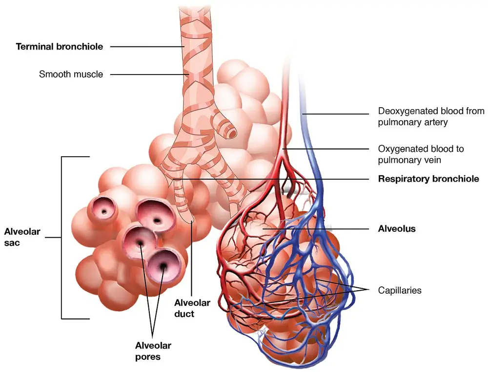
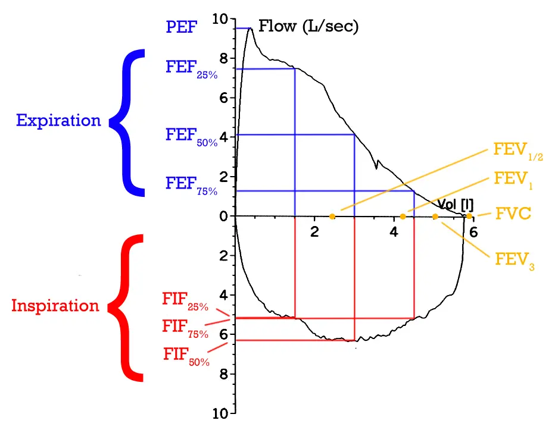

La Global Initiative for Asthma (GINA) a mis à jour son guide de synthèse en 2026GINA 2026. Elle y définit l'asthme comme une maladie respiratoire chronique, aux nombreux phénotypes, marquée le plus souvent par une inflammation chronique des voies aériennesGINA 2026. Les symptômes comprennent la respiration sifflante, la gêne respiratoire, l'oppression thoracique et la toux, et ils varient dans le tempsGINA 2026. Lorsque le patient est symptomatique, l'air sort difficilement des poumons, car les bronches se rétrécissent, leurs parois s'épaississent et le mucus augmenteGINA 2026.
La stratégie asthme des Hôpitaux universitaires de Genève (HUG), publiée en 2026HUG asthme, décrit une maladie hétérogène. En outre, l'inflammation chronique des voies aériennes réagit à divers stimuli et conduit à une hyperréactivité bronchiqueHUG asthme. Il en résulte des symptômes respiratoires et une limitation du flux expiratoire, variables dans le tempsHUG asthme. L'obstruction peut régresser spontanément, et les bronchodilatateurs et les corticostéroïdes inhalés l'améliorentHUG asthme.
L'exacerbation asthmatique est l'entité de cette leçon. GINA la définit comme une aggravation aiguë ou subaiguë, soudaine ou progressive, des symptômes et de la fonction pulmonaire par rapport à l'état habituel de la personneGINA 2026. Le tableau typique associe donc une respiration sifflante expiratoire, une dyspnée et une toux, au sein d'une maladie déjà connue ou encore ignorée.
La respiration sifflante, ou wheezing, est un bruit musical produit par une obstruction des voies respiratoires inférieures, le plus souvent en expirationHUG urgences. Par ailleurs, un sifflement bilatéral oriente vers une maladie réactive comme l'asthme ou la bronchiolite. Un sifflement unilatéral évoque plutôt l'inhalation d'un corps étrangerHUG urgences.
Le sifflement est fortement évocateur d'une obstruction bronchique, mais il ne suffit pas au diagnosticHUG asthme. Son intensité ne reflète pas la sévérité de la criseHUG asthme. Un thorax devenu silencieux traduit au contraire une obstruction majeure, ce qui impose de transférer le patient en soins intensifsGINA 2026.
Synonymes admis et termes à éviter
Les synonymes admis de l'exacerbation sont la crise d'asthme, la poussée et l'attaque, que GINA recommande d'employer avec le patient parce qu'il les comprendGINA 2026. Le terme « asthme aigu sévère » désigne, dans la stratégie des HUG, la forme qui impose une prise en charge hospitalièreHUG asthme. L'information professionnelle suisse du salbutamol emploie encore l'expression « état de mal asthmatique » pour le traitement de la crise la plus graveAIPS (information professionnelle suisse) 37397.
Le terme « asthme cardiaque » est à éviter, car il désigne une insuffisance cardiaque qui simule l'asthmeHUG asthme. Les HUG la rangent parmi les diagnostics différentielsHUG asthme. Il faut aussi distinguer l'asthme sévère de l'asthme difficile à traiter. Dans la majorité des cas, les paliers 4 et 5 reflètent un mauvais contrôle dû à des cofacteurs non pharmacologiques, comme la technique d'inhalation ou l'adhérenceHUG asthme.
Ce que l'entité est, ce qu'elle n'est pas, ce qui s'en approche
L'asthme est défini par deux éléments : des symptômes respiratoires typiques et variables, et une limitation variable du flux expiratoireGINA 2026. En outre, il ne se confond pas avec la bronchopneumopathie chronique obstructive (BPCO), la mucoviscidose, les bronchectasies ou une tumeurHUG asthme. Il se distingue aussi du reflux, de la dysfonction des cordes vocales, de l'insuffisance cardiaque et de la respiration dysfonctionnelleHUG asthme. La toux médicamenteuse sous inhibiteur de l'enzyme de conversion fait partie de la même listeHUG asthme. Chez l'enfant, le sifflement du nourrisson et de l'enfant d'âge préscolaire disparaît souvent à l'âge scolaire, mais l'asthme peut récidiverGINA 2026.
La sévérité de l'asthme chronique se distingue de celle de l'exacerbation. La première dépend de la dose minimale de traitement qui assure le contrôle des symptômes et prévient les exacerbationsHUG asthme. La seconde se juge au moment de la criseHUG asthme. Une exacerbation sévère peut survenir chez un patient dont l'asthme semblait léger, car GINA rappelle que ces crises peuvent être mortelles même en cas de symptômes raresGINA 2026.
Un asthme dit de toux isolée existe aussi : la toux peut être le seul symptôme, et le test de réversibilité peut alors rester négatifGINA 2026. Enfin, la présence de sibilances ne signifie pas toujours qu'il s'agit d'un asthme. En soins primaires, 25 à 35 % des patients étiquetés asthmatiques n'en seraient pas atteintsGINA 2026.
2. Épidémiologie (Suisse, puis Europe)
En Suisse, la stratégie des HUG décrit l'asthme comme la pathologie respiratoire chronique la plus fréquenteHUG asthme. Par ailleurs, sa prévalence atteint environ 5 à 7 %, et son incidence reste stable ces dernières annéesHUG asthme. Au niveau européen, la task force de l'European Respiratory Society (ERS) indique que la prévalence est de 5 à 10 % de la populationétude 35169025. À l'échelle mondiale, plus de 350 millions de personnes sont atteintesétude 34364680. L'asthme reste la maladie chronique la plus courante chez l'enfant, avec au moins 30 millions d'enfants et de jeunes adultes touchés en Europeétude 34364680.
Les données suisses les plus précises sur l'incidence viennent de la cohorte SAPALDIA. Elle a suivi 5128 adultes de 18 à 60 ans, sans asthme, entre 1991/1992 et 2010/2011étude 26206877. Sur ces vingt ans, 128 hommes (5,1 %) et 198 femmes (7,5 %) ont déclaré un nouvel asthme diagnostiqué par un médecinétude 26206877. Le sexe féminin double donc le risque, car l'odds ratio ajusté est de 1,99 (intervalle de confiance à 95 % de 1,54 à 2,57)étude 26206877.
Chiffre
Population
Année
Source
Prévalence de 5 à 7 %
Population suisse
2026
Stratégie asthme HUG
Prévalence de 5 à 10 %
Population européenne adulte
2022
Lignes directrices ERS sur le diagnostic
Plus de 350 millions de patients
Monde
2022
Revue Mol Aspects Med
Incidence cumulée sur 20 ans : 5,1 % des hommes, 7,5 % des femmes
5128 adultes de 18 à 60 ans, Suisse
2015
Cohorte SAPALDIA
Surdiagnostic jusqu'à 30-35 % des cas
Patients étiquetés asthmatiques
2026
Stratégie asthme HUG
Diagnostic erroné chez 25 à 35 %
Patients asthmatiques en soins primaires
2026
GINA, guide de synthèse
Mortalité de 8 % en soins intensifs
Asthme sévère ventilé
2024
Revue J Clin Med
Le tableau montre que le surdiagnostic pèse autant que le sous-diagnostic. Les HUG estiment que le surdiagnostic touche jusqu'à 30-35 % des cas, quand des symptômes évocateurs ne sont pas confirmés par un examenHUG asthme. GINA avance 25 à 35 % d'erreurs en soins primaires, ce qui justifie de documenter l'obstruction variable au dossierGINA 2026.
Âge, sexe et groupes à risque
Chez l'adulte, l'incidence est plus élevée chez la femme que chez l'homme, mais elle diminue avec l'âgeétude 26206877. En outre, la prédominance féminine est nettement plus forte chez les adultes non sensibilisésétude 26206877. Le phénotype le plus fréquent reste l'asthme allergique, qui débute dans l'enfance et s'associe à l'atopieHUG asthme. L'asthme non allergique de début tardif est moins sensible aux corticostéroïdesHUG asthme.
Plusieurs situations augmentent le risque d'exacerbation même lorsque les symptômes sont rares. GINA retient le surusage des β2-agonistes de courte durée d'action (SABA) et l'insuffisance de corticostéroïdes inhalésGINA 2026. Elle cite aussi l'obésité, la rhinosinusite chronique, le reflux, l'allergie alimentaire confirmée et la grossesseGINA 2026. Le tabac, la pollution et une fonction pulmonaire basse comptent également, tout comme une exacerbation sévère l'an dernier ou une intubation antérieureGINA 2026.
Les HUG ajoutent des facteurs de mauvais pronostic : un séjour antérieur aux soins intensifs, une hospitalisation pour asthme dans l'année et l'absence de plan d'actionHUG asthme. Par ailleurs, l'usage de plus de 2 emballages de bêta-mimétiques par mois pèse aussi, comme l'isolement social, la précarité et la maladie psychiatriqueHUG asthme. Chez la femme enceinte, les symptômes s'aggravent dans un tiers des cas, plus souvent au deuxième trimestreHUG asthme.
Mortalité, histoire naturelle et enjeux de santé publique
Les exacerbations comptent parmi les motifs les plus fréquents de consultation aux urgences et d'hospitalisation, en particulier chez l'enfantétude 25276236. La mortalité par asthme a diminué grâce aux stratégies internationales et aux corticostéroïdes inhalésHUG asthme. Une proportion importante des décès resterait pourtant évitable par un meilleur usage des traitements recommandésHUG asthme. Une exacerbation sévère peut en effet être mortelle, même chez une personne dont les symptômes étaient peu fréquentsGINA 2026.
Le surusage du SABA est un marqueur de risque mesurable. La délivrance de 3 boîtes de 200 doses ou plus par an s'associe à davantage d'exacerbations sévèresGINA 2026. La délivrance de 12 boîtes ou plus s'associe à un risque accru de décès par asthmeGINA 2026. Un traitement par SABA seul augmente donc le risque d'exacerbation, d'altération de la fonction pulmonaire et de décèsGINA 2026.
Sur le plan évolutif, les sifflements du jeune enfant disparaissent souvent à l'âge scolaire, mais cette rémission n'équivaut pas à une guérison puisque l'asthme récidive fréquemmentGINA 2026. Un traitement précoce par corticostéroïde inhalé à faible dose préserve mieux la fonction pulmonaire que celui qui débute après 2 à 4 ans de symptômesGINA 2026. À l'inverse, une exacerbation sévère survenue sans corticostéroïde inhalé aggrave la fonction pulmonaire à long termeGINA 2026.
En santé publique, l'enjeu consiste à passer d'un traitement de crise au SABA seul à un traitement qui contient toujours un corticostéroïde inhalé. En outre, GINA estime qu'un tel traitement réduit le risque d'exacerbation sévère de moitié à deux tiers par rapport au SABA seulGINA 2026. Les HUG notent aussi que la plupart des asthmes dits sévères sont en réalité difficiles à traiterHUG asthme. La technique d'inhalation, l'observance et les comorbidités expliquent cette difficultéHUG asthme.
3. Physiopathologie
Le terrain commence par l'hyperréactivité bronchique, c'est-à-dire une réponse bronchoconstrictrice exagérée à un stimulus donné, associée à l'inflammation chronique que l'on retrouve chez la plupart des asthmatiquesétude 10856115. Cette inflammation est due, dans la majorité des cas, à des réponses inappropriées des lymphocytes T auxiliaires de type 2 (Th2) et des cellules lymphoïdes innées aux allergènesétude 10856115. Il en résulte une cascade de médiateurs de type 2étude 10856115. Ce point de départ explique à la fois les symptômes variables et la réponse aux corticostéroïdes.
De la molécule à la cellule : l'inflammation de type 2
Au niveau moléculaire, les cytokines produites par l'épithélium bronchique, appelées alarmines, orchestrent la réponse de type 2 contre des allergènes pourtant inoffensifsétude 34364680. Par ailleurs, elles recrutent dans le tissu pulmonaire des lymphocytes Th2, des cellules lymphoïdes innées de type 2, des macrophages de type 2 et des éosinophilesétude 34364680. La rupture de la barrière épithéliale favorise cette cascade, et l'exposition aux polluants environnementaux jouerait un rôle dans l'augmentation de la prévalenceétude 34364680.
Les biomarqueurs de type 2 traduisent cette inflammation : la fraction expirée de monoxyde d'azote (FeNO) et les éosinophiles sanguins définissent l'asthme éosinophiliqueHUG asthme. En revanche, l'asthme non type 2 survient surtout à l'âge adulte et exige de plus hautes doses de corticostéroïdesHUG asthme. Les anticorps monoclonaux ciblent précisément ces voiesHUG asthme. L'omalizumab agit sur les IgE, le mépolizumab et le benralizumab sur la voie éosinophilique de l'interleukine, et le dupilumab sur l'interleukine 4HUG asthme.
Le FeNO se mesure dans l'air expiré avec un appareil portatifHUG asthme. Une valeur de 50 ppb ou plus soutient le diagnostic lorsque la spirométrie n'est pas conclusiveHUG asthme. GINA précise que des valeurs plus basses n'excluent pas l'asthmeGINA 2026. Le FeNO et les éosinophiles varient avec le sexe, l'âge et le moment de la journéeGINA 2026.
Les éosinophiles se dosent dans le sang avant l'introduction des corticoïdes, car ce dosage renseigne sur le phénotypeHUG asthme. Une éosinophilie très élevée conduit à discuter avec le spécialiste d'une aspergillose bronchopulmonaire allergique ou d'une vasculariteHUG asthme.
Du tissu à la clinique : trois mécanismes d'obstruction
La bronchoconstriction est le premier mécanisme. La contraction du muscle lisse bronchique peut dépendre de facteurs intrinsèques, comme l'expression génique du muscleétude 10856115. Elle dépend aussi de facteurs extrinsèques, car les cytokines IL-4, IL-13 et le facteur de nécrose tumorale alpha modifient la contractilité in vitroétude 10856115. Cette contraction explique la rapidité d'action des bronchodilatateurs.
L'œdème et le remodelage forment le deuxième mécanisme. Des activations répétées épaississent la paroi par infiltration sous-épithéliale, hypertrophie et hyperplasie du muscle lisse et dépôts de matriceétude 10856115. La lumière se rétrécit alors, et la compliance des voies aériennes diminueétude 10856115. Les corticoïdes inhalés agissent justement sur cette composante inflammatoire, en diminuant aussi l'œdème et l'hypersécrétion bronchiqueHUG asthme.
L'hypersécrétion de mucus constitue le troisième mécanisme. Les cellules caliciformes de la paroi augmentent en nombre, et l'IL-4 ainsi que l'IL-13 stimulent la sécrétionétude 10856115. Les autopsies retrouvent des bouchons muqueux à des degrés variables, avec la charge la plus élevée dans les asthmes mortelsétude 10856115. Un scanner réalisé pendant l'exacerbation montre que cette charge s'accompagne d'un VEMS (volume expiratoire maximal par seconde) plus bas et d'une moindre réponse aux corticoïdes et aux bronchodilatateursétude 10856115.
Déclencheurs de l'exacerbation
Les déclencheurs sont les infections virales des voies respiratoires, les allergènes domestiques ou professionnels, la fumée de tabac, le vapotage, l'exercice et le stressGINA 2026. Par ailleurs, ils provoquent d'autant plus de symptômes que l'asthme n'est pas contrôlé par le traitementGINA 2026. Certains médicaments, notamment les bêtabloquants, déclenchent des exacerbations, tout comme l'aspirine et les anti-inflammatoires non stéroïdiens chez certains patientsGINA 2026.
Une mauvaise adhérence aux corticoïdes inhalés et l'exposition à la pollution ou au pollen figurent aussi parmi les causes fréquentesGINA 2026. Cependant, l'exacerbation peut survenir sans aucun de ces facteursGINA 2026. L'amélioration des symptômes pendant les congés ou les vacances oriente vers un asthme professionnelHUG asthme.
Hyperinflation dynamique et conséquences cardiorespiratoires
Dans la crise, la limitation du débit expiratoire empêche l'évacuation complète des alvéoles, ce qui piège l'air pendant la respiration courante : c'est l'hyperinflation dynamiqueétude 10856115. Le volume pulmonaire de fin d'expiration augmente et la capacité inspiratoire diminueétude 10856115. Le patient respire donc près de la capacité pulmonaire totale, sur la partie rigide de la courbe pression-volumeétude 10856115.
Cette hyperinflation explique les formes graves. Chez le patient ventilé, elle peut provoquer une hypotension par baisse du retour veineux et par hausse de la postcharge du ventricule droit, ainsi qu'un pneumothoraxétude 10856115. Le pneumothorax complique 3 à 6 % des ventilations pour asthme sévère, et le risque augmente lorsque le volume de fin d'inspiration dépasse 20 mL/kgétude 10856115.
Corrélation entre perturbation, exploration et traitement
Perturbation
Exploration qui la montre
Traitement qui la corrige
Inflammation de type 2 des voies aériennes
FeNO de 50 ppb ou plus, éosinophiles sanguins
Corticoïde inhalé ; biothérapie en cas d'asthme sévère
Bronchoconstriction du muscle lisse
Sibilances, VEMS/CVF (capacité vitale forcée) abaissé, réversibilité après bronchodilatateur
Salbutamol, ipratropium, formotérol
Œdème et remodelage de la paroi
Obstruction partiellement fixée, VEMS bas
Corticoïdes inhalés puis systémiques
Hypersécrétion et bouchons muqueux
Silence auscultatoire, scanner thoracique, échec du traitement
Saturation en oxygène, gaz du sang, état de conscience
Oxygène, ventilation non invasive ou invasive
Ce tableau relie chaque perturbation à son examen et à son traitement. Ainsi, la logique des traitements suit la physiopathologie. Les β2-agonistes relâchent le muscle lisse, et les anticholinergiques bloquent les récepteurs muscariniquesétude 10856115. Les corticoïdes réduisent l'inflammation dont dépend l'obstruction persistanteétude 10856115.
Effets des traitements sur le mécanisme
Les SABA ont une durée d'action de 4 à 6 heuresHUG asthme. Leur usage excessif réduit le nombre de récepteurs β2 et la réponse thérapeutique, ce qui augmente le risque d'exacerbation grave et de mortalitéHUG asthme. GINA ajoute que l'usage régulier du SABA accroît les réponses allergiques et l'inflammation et diminue la réponse bronchodilatatriceGINA 2026.
Le sulfate de magnésium par voie intraveineuse est un bronchodilatateur de deuxième ligne qui relâche le muscle lisse par blocage des canaux calciquesétude 10856115. L'ipratropium inhibe aussi la sécrétion de mucus, mais son pic d'action survient entre 60 et 90 minutesétude 10856115. Les β2-agonistes à forte dose peuvent enfin provoquer une acidose lactique de type B, qui n'indique pas une hypoperfusion tissulaireétude 10856115.
Les β2-agonistes, surtout par voie parentérale ou en nébulisation, peuvent entraîner une hypokaliémie sérieuseAIPS 37397. Le risque augmente avec les dérivés de la xanthine ou les diurétiques, ce qui justifie la surveillance du potassium sériqueAIPS 37397. L'information professionnelle du salbutamol signale aussi des modifications métaboliques réversibles de ces médicamentsAIPS 37397.
Zone respiratoire et muscle lisse bronchiolaire. OpenStax montre en couleurs la bronchiole terminale, le muscle lisse et les alvéoles, avec des légendes en anglais.

Le lecteur lit d’abord seul la zone respiratoire, puis il compare sa lecture à la copie annotée.
Les numéros posés sur la zone respiratoire correspondent à la lecture qui suit.
Lecture guidée
La bronchiole terminale conduit l’air vers les alvéoles, et le wheezing naît à cet étage.
Le muscle lisse entoure la bronchiole, et sa contraction rétrécit le calibre expiratoire.
La bronchiole respiratoire précède les alvéoles, là où l’obstruction siffle à l’expiration.
L’alvéole et les capillaires échangent les gaz, en aval du rétrécissement qui siffle.
Pièges
Le schéma est sain : il ne montre ni bouchon muqueux ni spasme, seulement le lieu du spasme.
Un stridor inspiratoire ne se lit pas sur cette image, car le larynx n’y figure pas.
Ce que l’image décide Une sibilance expiratoire naît de ce rétrécissement distal, et le bronchodilatateur vise le muscle lisse dessiné ici.
Image : OpenStax College, CC BY 3.0, File:2309 The Respiratory Zone.jpg, consultée le 2026-11-15. La copie annotée de cette figure reste une œuvre dérivée sous la même licence.
4. Démarche diagnostique
Devant une dyspnée sifflante aiguë, la démarche suit l'ordre de la gravité : on cherche d'abord ce qui tue en quelques minutes, puis ce qui est fréquent. Pendant que l'on débute le bronchodilatateur et l'oxygène, GINA demande de rechercher une anaphylaxieGINA 2026. Elle demande aussi d'évaluer la dyspnée, la fréquence respiratoire, les muscles accessoires, l'entrée d'air, le pouls, la saturation et la fonction pulmonaireGINA 2026. Le médecin doit ensuite considérer les autres causes de dyspnée aiguë, comme l'insuffisance cardiaque, la dysfonction des voies aériennes supérieures, le corps étranger inhalé et l'embolie pulmonaireGINA 2026.
Les diagnostics graves à écarter d'abord
L'anaphylaxie avec bronchospasme prime sur tout : lorsque l'anaphylaxie coexiste avec l'asthme, l'adrénaline par voie intramusculaire ou nasale se donne en premierGINA 2026. L'allergie alimentaire déclenche rarement des symptômes d'asthme isolés, mais elle peut provoquer une anaphylaxieGINA 2026. Une allergie alimentaire confirmée est un facteur de risque de décès par asthmeGINA 2026. L'information professionnelle suisse de l'adrénaline retient une dose habituelle de 500 microgrammes en injection intramusculaire dans le choc anaphylactique, répétable à intervalles de 5 minutesAIPS 56551.
L'inhalation d'un corps étranger se reconnaît à l'apparition brutale des symptômes et à un sifflement unilatéralHUG urgences. Chez l'enfant, un stridor aigu ou de la bave avec incapacité d'avaler l'évoquent aussiHUG urgences. Le stridor est un bruit inspiratoire dû à une obstruction des voies supérieures, alors que le wheezing signe une obstruction inférieureHUG urgences. Un sifflement unilatéral doit donc faire suspecter un corps étranger plutôt qu'un asthmeHUG urgences.
Le pneumothorax et les autres causes de murmure vésiculaire unilatéral sont à éliminer lorsque l'entrée d'air est asymétriqueHUG urgences. L'obstruction, le pneumothorax, l'hémothorax, l'épanchement pleural, l'infiltrat et l'atélectasie diminuent ou abolissent le bruit respiratoire d'un côtéHUG urgences. La radiographie du thorax est indiquée en cas de suspicion de pneumothorax, de pneumomédiastin ou d'infiltrat, et lors de l'échec du traitementHUG asthme. L'échographie pulmonaire au lit du patient aide aussi à le détecterétude 10856115.
L'embolie pulmonaire se soupçonne sur la probabilité clinique, selon le score de Genève révisé, dans l'article suisse de 2007RMS (Revue médicale suisse). Les D-dimères négatifs l'écartent lorsque la probabilité est basse ou intermédiaire, alors qu'une probabilité clinique haute conduit directement à l'angio-scanner thoraciqueRMS.
Les diagnostics fréquents qui miment l'exacerbation
L'insuffisance cardiaque aiguë, que l'on nomme à tort « asthme cardiaque », figure dans la liste des diagnostics différentiels de la stratégie des HUGHUG asthme. Cette liste comprend aussi la BPCO, les bronchectasies, la dysfonction des cordes vocales, le reflux et le corps étrangerHUG asthme. Le sifflement n'est pas spécifique, car il traduit une obstruction bronchique quelle que soit sa causeHUG asthme. Il faut donc chercher les signes d'insuffisance cardiaque avant d'attribuer la dyspnée à l'asthmeGINA 2026.
L'obstruction laryngée induite, appelée aussi dysfonction des cordes vocales, simule l'asthme et doit être évoquée devant une toux sèche persistante sans autre symptôme respiratoireGINA 2026. La pneumonie et la BPCO complètent la liste des pièges, car GINA invite à considérer ces causes non asthmatiques de dyspnée aiguë en soins primairesGINA 2026.
Le contexte de l'enfant modifie la liste : le sifflement bilatéral du nourrisson évoque d'abord la bronchiolite, alors que le stridor aigu évoque le faux-croupHUG urgences. Chez l'enfant de moins de 18 ans, GINA recommande un score clinique validé, le Pediatric Respiratory Assessment Measure (PRAM), pour juger la sévéritéGINA 2026.
Diagnostic
Élément qui tranche
Piège
Conduite si le test est positif
Anaphylaxie avec bronchospasme
Contexte allergénique, atteinte cutanée ou laryngée associée
Traiter seulement l'asthme
Adrénaline intramusculaire d'abord
Corps étranger inhalé
Début brutal, sifflement unilatéral, stridor
Étiqueter un premier asthme
Avis ORL (oto-rhino-laryngologie) ou pneumologique urgent
Pneumothorax
Bruit respiratoire unilatéral diminué, radiographie ou échographie
Aggravation sous ventilation
Drainage selon avis spécialisé
Embolie pulmonaire
Probabilité clinique, D-dimères, angio-scanner
Attribuer la dyspnée à l'asthme
Imagerie puis anticoagulation
Insuffisance cardiaque aiguë
Signes congestifs, antécédents cardiaques
Bronchodilater seul
Traitement cardiologique
Obstruction laryngée induite
Stridor inspiratoire, échec des bronchodilatateurs
Prendre la dysfonction pour un asthme sévère
Avis ORL ou pneumologique
BPCO ou pneumonie
Âge, tabac, fièvre, infiltrat radiologique
Antibiotiques sans infection
Prise en charge de l'entité
Ce tableau résume les éléments qui font basculer le diagnostic. Aucun des signes isolés ne remplace le jugement clinique, car le sifflement est un signe d'obstruction commun à plusieurs maladiesHUG asthme. En cas de doute sur un diagnostic grave, on traite d'abord l'urgence vitale, puis on poursuit l'enquêteGINA 2026.
Les signes de gravité à rechercher avant toute hypothèse sont décrits dans la fenêtre associée.
Les HUG retiennent un seul critère suffisant pour l'asthme aigu sévèreHUG asthme. En outre, ces critères sont l'incapacité à finir une phrase en une respiration, l'agitation, la position assise ou penchée en avant et l'usage des muscles accessoiresHUG asthme. S'y ajoutent une fréquence respiratoire de 30 par minute ou plus et une fréquence cardiaque de 120 par minute ou plusHUG asthme. Une saturation inférieure à 90 % et un débit expiratoire de pointe de 50 % ou moins complètent la listeHUG asthme.
GINA classe comme menaçant le pronostic vital le patient somnolent, confus ou cyanoséGINA 2026. Elle exige le transfert en soins intensifs lorsque le thorax devient silencieuxGINA 2026.
5. Anamnèse ciblée et drapeaux rouges
L'anamnèse d'une crise sifflante a deux buts : mesurer la gravité immédiate et reconnaître les facteurs qui annoncent une évolution défavorable. Chaque question repose sur un mécanisme, que le texte précise ci-dessous.
Chronologie et caractère des symptômes
Il faut demander comment la gêne s'est installée. Le plus souvent, l'exacerbation est insidieuse : la dyspnée s'aggrave progressivement, avec la toux, le sifflement et la limitation des activitésHUG asthme. Un début brutal oriente au contraire vers un autre diagnostic. Les soignants des urgences pédiatriques posent donc systématiquement la question de l'apparition brutale pour ne pas manquer un corps étrangerHUG urgences.
Les symptômes de l'asthme sont la dyspnée, la toux, la respiration sifflante et l'oppression thoracique non douloureuseHUG asthme. Par ailleurs, ils varient dans le temps et en intensité, et ils s'aggravent la nuit et au réveilHUG asthme. Le rire, le froid, les allergènes, l'exercice ou une infection virale les déclenchentHUG asthme. Cette variabilité reflète l'hyperréactivité bronchique, et c'est elle qui distingue l'asthme d'une obstruction fixeGINA 2026.
Déclencheurs, médicaments et expositions
La recherche des déclencheurs oriente la prévention. Les infections virales, les allergènes du domicile ou du travail, le tabac, le vapotage, l'exercice et le stress sont les plus fréquentsGINA 2026. Il faut aussi demander quels médicaments le patient prend, car les bêtabloquants peuvent déclencher une exacerbation, tout comme l'aspirine et les anti-inflammatoires non stéroïdiens chez certains patientsGINA 2026.
Lorsqu'une intolérance aux anti-inflammatoires est établie, GINA conseille d'éviter tous ces médicamentsGINA 2026. Les HUG relèvent aussi la toux médicamenteuse sous inhibiteur de l'enzyme de conversion parmi les diagnostics différentielsHUG asthme. Une amélioration pendant les congés évoque un asthme professionnel, et l'on cherche alors une variabilité saisonnière selon les allergènesHUG asthme.
Traitement actuel, adhérence et antécédents de crises
Les HUG recommandent de préciser la fréquence d'utilisation des SABA et des associations corticostéroïde inhalé-β2-agoniste de longue durée d'action (CSI-LABA)HUG asthme. En outre, il faut noter la date de la dernière prise de corticoïdes systémiquesHUG asthme. Ils demandent aussi la fréquence et la sévérité des crises antérieures : consultations aux urgences, séjours aux soins intensifs et intubationHUG asthme.
Ces réponses pèsent sur la décision d'hospitaliser. Une exacerbation sévère l'an dernier ou une intubation antérieure augmente le risque, comme le surusage du SABA ou l'absence de corticostéroïde inhaléGINA 2026. L'adhérence et la technique d'inhalation se vérifient en regardant le patient utiliser son dispositif, puisque beaucoup de patients ne prennent pas leurs médicaments comme prescritGINA 2026.
Les comorbidités entretiennent le mauvais contrôle. GINA rappelle l'effet de la rhinite, de la rhinosinusite, du reflux gastro-œsophagien, l'obésité, le syndrome d'apnées du sommeil, la dépression et l'anxiétéGINA 2026. Une grossesse en cours se recherche chez la femme en âge de procréer, car un tiers des patientes voient leurs symptômes s'aggraverHUG asthme.
Questions propres à l'enfant et au nourrisson
Chez le petit enfant, l'infirmier demande si l'enfant mange, s'il finit son biberon et s'il vomitHUG urgences. Il demande aussi si les parents, frères et sœurs sont malades et si l'enfant revient de voyageHUG urgences. Ces questions cherchent une infection virale déclenchante, ce qui correspond à un facteur déclenchant fréquent de l'exacerbationGINA 2026.
Drapeaux rouges
Drapeau rouge
Signification
Action immédiate
Incapacité à finir une phrase, agitation, position penchée en avant
Exacerbation sévère
Oxygène, bronchodilatateurs, transfert
Somnolence, confusion, cyanose, thorax silencieux
Menace vitale, épuisement
Soins intensifs, préparer l'intubation
Début brutal, sifflement unilatéral, bave
Corps étranger, épiglottite
Prévenir le médecin immédiatement
Urticaire, œdème du visage, hypotension
Anaphylaxie
Adrénaline intramusculaire en premier
Soins intensifs ou hospitalisation dans l'année
Risque de décès accru
Hospitaliser, avis spécialisé
Corticoïdes récents, plus d'un flacon de SABA par mois
Asthme mal contrôlé
Réévaluer, intensifier le traitement de fond
Absence de réponse au salbutamol, effet de moins de 3 heures
Aggravation de l'asthme
Consultation médicale immédiate
Crises à prédominance nocturne, patient seul, maladie psychiatrique
Mauvais pronostic
Envisager l'admission
Les HUG listent ces facteurs de mauvais pronostic : antécédent de soins intensifs, hospitalisation pour asthme dans l'année et prise récente de glucocorticoïdes en moins de 30 joursHUG asthme. S'y ajoutent une consommation de SABA de plus d'un flacon par mois, l'isolement à domicile, la maladie psychiatrique et les crises nocturnesHUG asthme. L'information professionnelle suisse du salbutamol demande une consultation immédiate si l'effet d'une dose habituellement efficace dure moins de 3 heuresAIPS 37397. L'absence de réponse au salbutamol impose aussi une consultation médicale urgenteAIPS 37397.
Lorsque le patient utilise un réliever à base de formotérol, il doit consulter si les symptômes s'aggravent rapidementGINA 2026. Il doit aussi consulter s'ils ne s'améliorent pas en 2 à 3 jours ou s'il a inhalé plus de 12 doses d'ICS-formoterol en 24 heuresGINA 2026.
Avec l'association budésonide-salbutamol, le seuil est de plus de 6 prises en une journéeGINA 2026. Avec le SABA seul, il faut consulter si le besoin réapparaît dans les 3 heuresGINA 2026.
6. Examen physique ciblé, région par région
L'examen physique d'une crise sifflante doit rester bref, car le traitement ne doit pas attendre. Il part de l'évaluation standard ABC (airway, breathing, circulation), puis il recherche les signes de gravité qui décident du lieu de prise en chargeHUG asthme. Le normal sert de référence : hors crise, l'examen est souvent normal, et le sifflement s'entend surtout lors de l'expiration forcéeGINA 2026.
État général et conscience
État général détaille le geste, le signe et le piège propres à l’exacerbation.
On observe d'abord le patient à distance. Dans une exacerbation légère, la personne peut parler en phrases, s'allonger et reste sans agitationGINA 2026. La forme modérée oblige à parler par phrases courtes et à préférer la position assiseGINA 2026. Le patient qui ne peut plus parler, boire ni s'allonger, ou qui est somnolent, confus ou cyanosé, présente une exacerbation sévère ou menaçant la vieGINA 2026.
Chez l'enfant, le premier contrôle peut se faire dans les bras des parents, car l'enfant calme livre des mesures plus fiablesHUG urgences. On retire les habits du haut du corps pour voir le thorax, et l'enfant reste semi-assis plutôt que couché à platHUG urgences.
Inspection du thorax et signes de lutte
Inspection du thorax détaille le geste, le signe et le piège propres à l’exacerbation.
L'inspection recherche la tachypnée, les tirages, le balancement thoraco-abdominal et le battement des ailes du nezHUG urgences. L'utilisation des muscles accessoires et la position penchée en avant font partie des critères d'asthme aigu sévèreHUG asthme. Ces signes reflètent l'effort respiratoire imposé par l'hyperinflation, car le patient respire près de la capacité pulmonaire totaleétude 10856115.
Chez l'enfant, la bave et l'incapacité d'avaler imposent d'alerter rapidement le médecin puisqu'elles évoquent une épiglottite ou un corps étrangerHUG urgences. La voix rauque, la toux aboyante et le stridor orientent vers l'obstruction des voies supérieures plutôt que vers les bronchesHUG urgences.
La fréquence respiratoire se compte sur une minute chez l'enfant de moins d'un anHUG urgences. La saturation reste monitorée en continu si l'enfant est dyspnéique ou si elle est inférieure à 95 %HUG urgences. Chez l'adulte, une fréquence respiratoire supérieure à 20 par minute et une désaturation signent une exacerbation modérée à sévèreHUG asthme. L'incapacité à finir les phrases et un débit expiratoire de pointe inférieur à 50-70 % de la valeur prédite la signent aussiHUG asthme.
GINA définit la forme sévère par une fréquence respiratoire supérieure à 30 par minuteGINA 2026. Elle retient aussi une saturation en air ambiant inférieure à 92 %GINA 2026. Les HUG retiennent une fréquence de 30 par minute ou plus, une fréquence cardiaque de 120 par minute ou plus et une saturation inférieure à 90 %HUG asthme. Les deux référentiels convergent sur la gravité, même si leurs seuils diffèrent légèrement.
L'oxymétrie de pouls peut surestimer la saturation chez un patient hypoxémique à peau foncée, et les cibles se corrigent en altitudeGINA 2026. La mesure reste donc à interpréter avec la cliniqueGINA 2026. Un doute justifie une gazométrie lorsque la saturation est inférieure à 92 % ou que l'asthme est sévèreHUG asthme.
Auscultation pulmonaire
Auscultation détaille le geste, le signe et le piège propres à l’exacerbation.
L'auscultation recherche les sibilances expiratoires, l'expirium prolongé et l'entrée d'airHUG asthmeGINA 2026. Par ailleurs, les sibilances sont fortement évocatrices d'obstruction, mais leur intensité ne reflète pas la sévérité, de sorte qu'un asthme grave peut être presque silencieuxHUG asthme. Le silence auscultatoire signe un asthme sévère avec obstruction majeure, et il impose le transfert en soins intensifsHUG asthmeGINA 2026.
Une asymétrie des murmures vésiculaires doit faire chercher un pneumothorax, un épanchement, un infiltrat ou une atélectasie, et un sifflement unilatéral suggère un corps étrangerHUG urgences. En outre, GINA recommande de considérer la pneumonie parmi les causes non asthmatiques de dyspnée aiguëGINA 2026.
Le débit expiratoire de pointe (DEP (débit expiratoire de pointe) ou peak flow) se mesure lorsque l'état clinique le permetHUG asthme. On compare la valeur à la valeur prédite ou à la meilleure valeur personnelleGINA 2026. Pour la technique, on utilise toujours le même débitmètre et l'on note la valeur la plus élevée de trois mesuresGINA 2026. Un DEP supérieur à 70 % de la meilleure valeur oriente vers une forme légèreGINA 2026. Un DEP de 50 à 70 % oriente vers une forme modérée, et un DEP inférieur à 50 % vers une forme sévèreGINA 2026.
Ce tableau fixe le normal avant le pathologique. Il rappelle que chaque valeur doit être lue avec la clinique puisque aucun signe isolé ne suffit à classer la criseHUG asthmeGINA 2026.
Dans la présentation légère, la saturation en air ambiant atteint au moins 94 % et le DEP dépasse 70 % de la valeur personnelle ou préditeGINA 2026. Par ailleurs, dans la présentation modérée, la saturation atteint au moins 92 % et le DEP se situe entre 50 et 70 %GINA 2026.
Dans la présentation sévère ou menaçant la vie, le patient ne peut plus parler, boire ni s'allongerGINA 2026. En outre, la saturation est inférieure à 92 %, la fréquence respiratoire dépasse 30 par minute et le DEP est inférieur à 50 %GINA 2026. Le thorax est silencieux ou presqueGINA 2026.
7. Approche syndromique
L'approche syndromique regroupe les signes pour comprendre ce que la crise fait au patient avant de la nommer. Elle part des plaintes, les signes fonctionnels, et des constatations de l'examen, les signes physiques, puis elle remonte au mécanisme. Sept syndromes structurent la présentation de l'exacerbation asthmatique.
7.1 Syndrome d'obstruction bronchique variable
Les signes fonctionnels sont la dyspnée, la toux, la respiration sifflante et l'oppression thoracique non douloureuseHUG asthme. Par ailleurs, les signes physiques sont les sibilances, fortement évocatrices, et l'expirium prolongé, qui peut être difficile à objectiverHUG asthme. Le syndrome obstructif résulte du rétrécissement des bronches, de l'épaississement de leurs parois et de l'excès de mucusGINA 2026.
Un syndrome obstructif est une réduction du débit d'air expiratoire. La spirométrie l'objective par un rapport VEMS/CVF inférieur à la limite inférieure de la norme, soit un score Z inférieur à 1,65HUG asthme. Dans l'asthme, cette obstruction est variable puisqu'elle se résout spontanément ou sous bronchodilatateurHUG asthme.
Le geste de recherche consiste à ausculter en expiration forcéeGINA 2026. On mesure ensuite le VEMS avant et 10 à 15 minutes après l'inhalation de 4 bouffées de salbutamolGINA 2026HUG asthme.
7.2 Syndrome d'insuffisance respiratoire aiguë
Les signes fonctionnels sont l'incapacité à terminer les phrases, l'agitation et l'épuisementHUG asthme. Les signes physiques sont la tachypnée, la tachycardie, l'usage des muscles accessoires, la baisse de la saturation, le silence auscultatoire et le trouble de l'état de conscienceHUG asthme. Le syndrome d'insuffisance respiratoire s'installe quand la bronchoconstriction, l'inflammation et l'hyperinflation dépassent les réserves du patient et conduisent à l'arrêt cardiorespiratoireétude 10856115.
L'insuffisance respiratoire aiguë de l'asthme associe hypoxémie et fatigue des muscles respiratoires. Les indications de ventilation invasive sont l'arrêt respiratoire, l'épuisement musculaire extrême et l'encéphalopathie, qui se manifestent par une acidose respiratoire croissante et une fatigue progressiveétude 10856115.
Le geste de recherche est la mesure de la saturation en oxygèneHUG asthme. Une gazométrie la complète lorsque la saturation est inférieure à 92 % ou que l'asthme est sévèreHUG asthme.
7.3 Syndrome d'hyperinflation dynamique
Le patient se plaint d'un effort respiratoire accru puisque l'air piégé l'oblige à générer une pression négative supplémentaire pour inspirerétude 10856115. L'examen montre une tachypnée et des signes de lutte, et chez le patient ventilé l'auto-PEEP mesure l'air piégéétude 10856115. Ce syndrome d'hyperinflation naît de la limitation du débit expiratoire, qui compromet la vidange alvéolaire pendant la respiration couranteétude 10856115.
L'auto-PEEP est la pression positive de fin d'expiration créée par l'air piégé. Le patient qui respire spontanément doit générer une pression intrathoracique négative supplémentaire pour la vaincre, ce qui augmente son travail respiratoireétude 10856115.
Chez le patient intubé, la pression de plateau se mesure par une pause inspiratoire et l'auto-PEEP par une pause expiratoireétude 10856115.
7.4 Syndrome allergique et inflammatoire de type 2
Les signes fonctionnels sont les antécédents d'atopie, comme l'eczéma, la rhinite allergique et les allergies, avec une sensibilisation aux acariens, aux pollens ou aux poils d'animauxHUG asthme. En outre, les signes biologiques sont l'élévation du FeNO et des éosinophiles sanguinsHUG asthme. Le syndrome de type 2 est dû à la réponse des lymphocytes Th2 et des cellules lymphoïdes innées aux allergènesétude 10856115.
Le phénotype allergique est le plus fréquent et débute dans l'enfanceHUG asthme. Le geste de recherche comprend la formule sanguine, le dépistage des allergies par Phadiatop et le dosage des IgE totauxHUG asthme. Un bilan allergologique avec tests cutanés ou IgE spécifiques est ensuite nécessaireHUG asthme.
7.5 Syndrome de bronchospasme induit
Certains patients présentent des symptômes après l'exercice, le froid, le rire, un bêtabloquant ou un anti-inflammatoire non stéroïdienHUG asthmeGINA 2026. Par ailleurs, l'examen retrouve des sibilances à l'effort ou après la prise du médicament en cause. L'asthme exacerbé par l'aspirine illustre ce syndrome de bronchospasme induit : GINA recommande d'éviter tous les anti-inflammatoires non stéroïdiens chez ces patientsGINA 2026.
Le geste de recherche est l'anamnèse des prises médicamenteuses et des circonstances de survenue. Un test de provocation peut confirmer l'intolérance à l'aspirine, mais il ne se pratique que dans un centre spécialisé disposant d'une réanimationGINA 2026.
Le syndrome de Widal appartient au groupe de l'asthme de type 2HUG asthme.
7.6 Syndrome des voies aériennes supérieures
Ce syndrome sert de contraste. Le signe fonctionnel est une voix rauque, une toux aboyante ou une bave ; le signe physique est le stridor, un bruit inspiratoire aiguHUG urgences. Le stridor est causé par une obstruction des voies supérieures, ce qui le distingue du sifflement expiratoire de l'asthmeHUG urgences.
Le stridor se rencontre dans le faux-croup et lors d'une aspiration de corps étranger, avec un ton aiguHUG urgences. Le geste de recherche est l'écoute à distance, avant l'auscultation, du temps respiratoire où le bruit survientHUG urgences.
7.7 Syndrome des complications ventilatoires
Le signe fonctionnel est l'aggravation brusque chez un patient ventilé, et le signe physique est l'hypotension ou l'asymétrie thoraciqueétude 10856115. En outre, l'hypotension découle de l'air piégé, qui réduit le retour veineux et augmente la postcharge du ventricule droitétude 10856115. Un pneumothorax complique 3 à 6 % des ventilations pour asthme sévèreétude 10856115.
Face à une hypotension chez un patient ventilé avec obstruction sévère, on réalise un essai d'apnée de 30 à 60 secondes et l'on optimise le rapport inspiration-expirationétude 10856115. Si l'hypotension persiste, on cherche un pneumothorax ou une baisse de la fonction cardiaqueétude 10856115.
La radiographie du thorax et l'échographie pulmonaire confirment le pneumothorax, et le drainage se fait par dissection mousse pour éviter de perforer un poumon hyperinfléétude 10856115.
Syndrome
Signes fonctionnels
Signes physiques
7.1 Obstruction bronchique
Dyspnée, toux, oppression, sifflement
Sibilances, expirium prolongé
7.2 Insuffisance respiratoire
Phrases incomplètes, agitation
Tachypnée, tirage, désaturation, silence
7.3 Hyperinflation dynamique
Effort respiratoire accru
Tachypnée, auto-PEEP chez le ventilé
7.4 Type 2 allergique
Atopie, rhinite, eczéma
FeNO et éosinophiles élevés
7.5 Bronchospasme induit
Symptômes à l'effort ou après un médicament
Sibilances reproductibles
7.6 Voies supérieures
Voix rauque, toux aboyante, bave
Stridor inspiratoire
7.7 Complications ventilatoires
Aggravation brusque sous ventilation
Hypotension, asymétrie thoracique
Le tableau permet de classer rapidement les signes en syndromes. Plusieurs syndromes coexistent presque toujours dans une exacerbation puisque l'obstruction bronchique entraîne l'hyperinflation et, si elle persiste, l'insuffisance respiratoireétude 10856115.
8. Diagnostic positif et critères
Le diagnostic positif d'asthme repose sur deux critères réunis : des symptômes évocateurs et la preuve d'une obstruction variable du flux expiratoire ou d'une inflammation bronchique excessiveHUG asthme. Par ailleurs, GINA formule la même exigence en 2026 : une histoire de symptômes respiratoires typiques et variables, et une limitation variable du débit expiratoire, actuelle ou passéeGINA 2026. La clinique seule ne suffit pas, et l'on documente la preuve au dossierHUG asthmeGINA 2026.
Ce qui suffit, ce qui ne suffit pas
Le sifflement est fortement évocateur mais non diagnostique, et son intensité ne mesure pas la sévéritéHUG asthme. Une spirométrie normale en dehors des symptômes n'exclut pas l'asthme puisque l'obstruction varieHUG asthme. Un FeNO ou des éosinophiles bas n'excluent pas non plus le diagnostic, tandis qu'une valeur élevée peut aussi venir d'une autre maladieGINA 2026.
Pendant une infection virale, la réponse au bronchodilatateur peut être absente chez un asthmatiqueGINA 2026. La variation entre deux visites présente une bonne spécificité mais une mauvaise sensibilitéGINA 2026. Il faut donc répéter le test pendant les symptômes ou après l'arrêt des bronchodilatateurs si la fonction pulmonaire est normaleGINA 2026.
Pendant une exacerbation, la règle change : le traitement ne doit pas être retardé, et le diagnostic se confirme ensuite par un examen paracliniqueHUG asthme. En dehors de la crise, il vaut mieux faire les tests avant le traitement puisque le diagnostic est plus difficile sous traitement ou sans symptômesHUG asthme.
Critères de la société savante et des HUG
Le tableau compare les seuils de GINA 2026GINA 2026 et ceux de la stratégie des HUG 2026HUG asthme, ce qui montre leurs écarts. Les HUG retiennent un rapport VEMS/CVF inférieur à la limite inférieure de la norme, soit un score Z inférieur à -1,65HUG asthme. Ils abandonnent ainsi le rapport fixe de 0,7 utilisé auparavantHUG asthme.
Critère
GINA 2026, adulte
GINA 2026, enfant
HUG 2026
Réversibilité au bronchodilatateur
VEMS ou CVF en hausse de 12 % et de 200 mL, ou DEP de 20 %
VEMS en hausse de 12 % de la valeur prédite, ou DEP de 15 %
Hausse supérieure à 10 % de la valeur prédite
Variabilité moyenne du DEP sur 2 semaines
Plus de 10 %
Plus de 13 %
DEP moyen variant de 20 % ou plus
Réponse aux corticoïdes inhalés pendant 4 semaines
VEMS ou CVF en hausse de 12 % et de 200 mL
VEMS en hausse de 12 %
VEMS en hausse de 200 mL et de 12 %
Variation entre les visites
VEMS de 12 % et de 200 mL
VEMS de 12 %
VEMS de 200 mL et de 12 %
FeNO
Plus de 50 ppb
Plus de 35 ppb
50 ppb ou plus
Provocation bronchique
Test positif
Test positif
Baisse du VEMS de 20 % ou plus
Les chiffres de GINA viennent de son guide de synthèseGINA 2026. En outre, chez l'adulte, la réversibilité correspond à une hausse du VEMS ou de la CVF d'au moins 12 % et de 200 mL, ou du DEP de 20 %GINA 2026. Chez l'enfant, la hausse du VEMS atteint 12 % de la valeur prédite, ou 15 % pour le DEPGINA 2026. La variabilité quotidienne moyenne du DEP sur 2 semaines dépasse 10 % chez l'adulte et 13 % chez l'enfantGINA 2026.
Les HUG notent qu'une réversibilité de plus de 10 % de la valeur prédite du VEMS ou de la CVF après bronchodilatateur est significativeHUG asthme. Par ailleurs, une variabilité du DEP moyen journalier de 20 % ou plus est un critèreHUG asthme. Le FeNO dépasse le seuil de 50 ppb dans les deux référentiels, mais GINA fixe celui de l'enfant à 35 ppbGINA 2026HUG asthme.
La task force de l'ERS de 2022étude 35169025 recommande un ordre de tests. Elle place en priorité la spirométrie avec test de réversibilitéétude 35169025. Si elle ne montre pas d'obstruction, viennent le FeNO, la variabilité du DEP et, en soins secondaires, la provocation bronchiqueétude 35169025. Elle souligne la difficulté diagnostique chez les patients déjà traités par corticostéroïdes inhalésétude 35169025.
Patient déjà sous corticoïdes inhalés
Un patient déjà sous corticostéroïde inhalé peut avoir des symptômes fréquents et une fonction pulmonaire inférieure à 70 % de la valeur préditeGINA 2026. GINA recommande alors de monter d'un palier puis de remesurer la fonction pulmonaire 1 à 2 mois plus tardGINA 2026. Une amélioration des symptômes et de la fonction confirme alors le diagnosticGINA 2026. À l'inverse, si les symptômes sont rares et la fonction supérieure à 70 %, on peut réduire le traitementGINA 2026. On remesure alors 2 à 4 semaines plus tardGINA 2026.
Scores et stades
Le contrôle de l'asthme se juge sur les 4 dernières semainesHUG asthme. Il est contrôlé lorsqu'aucun critère n'est présent, partiellement contrôlé avec 1 ou 2 critères et non contrôlé avec 3 critères ou plusHUG asthmeGINA 2026. Les critères sont les symptômes diurnes plus de 2 fois par semaine, la limitation des activités, les symptômes nocturnes et le traitement de secours plus de 2 fois par semaineHUG asthme. Le test de contrôle de l'asthme (Asthma Control Test) est l'outil validé de suivi recommandéHUG asthme.
La sévérité de l'asthme chronique se définit par les paliers de traitementHUG asthme. En outre, les paliers 1 et 2 correspondent à un asthme léger, le palier 3 à un asthme modéré et les paliers 4 et 5 à un asthme sévèreHUG asthme. La sévérité de l'exacerbation se classe en légère, modérée et sévère selon GINA, avec des critères de fréquence respiratoire, de saturation et de débit expiratoire de pointeGINA 2026.
Les HUG maintiennent cette classification en trois degrés pour distinguer la prise en charge ambulatoire de la prise en charge hospitalièreHUG asthme. GINA 2025 réunit en revanche les formes légère et modérée en asthme aigu non sévèreHUG asthme. Les exacerbations légères présentent aussi un risque de mauvaise évolution, ce qui explique ce regroupementHUG asthme.
Le diagnostic d'asthme sévère s'ajoute au précédent seulement après avoir exclu les causes de mauvais contrôle. Par ailleurs, un asthme difficile à traiter reste non contrôlé malgré un ICS-LABA à dose moyenne ou élevéeGINA 2026. La cause est souvent la technique d'inhalation, l'adhérence, le tabac, les comorbidités ou un diagnostic erronéGINA 2026.
9. Examens complémentaires
Les examens complémentaires servent deux moments distincts : confirmer l'asthme une fois la crise passée, et guider la prise en charge pendant la crise. En outre, pendant l'exacerbation, la clinique, la saturation et le débit expiratoire de pointe décident ; les examens paracliniques ne doivent jamais retarder le traitementHUG asthme. Cette logique explique les quatre niveaux ci-dessous.
9.a Gold standard
Le gold standard du diagnostic d'asthme est la démonstration d'une obstruction variable du flux expiratoire à la spirométrie. Les HUG la décrivent comme la pierre angulaire du diagnostic et l'examen de choixHUG asthme. La task force de l'ERS la place aussi en première position, suivie du test de réversibilité lorsqu'une obstruction est présenteétude 35169025.
La prescription exacte est une spirométrie avec test de réversibilité. Le bronchodilatateur se donne en 4 bouffées de salbutamol, et la mesure se répète 10 à 15 minutes plus tardHUG asthmeGINA 2026. Pour que la réponse soit interprétable, on suspend avant le test les SABA pendant au moins 4 heuresGINA 2026. On suspend le formotérol et le salmétérol pendant 24 heures, et le vilantérol ou l'indacatérol pendant 48 heuresGINA 2026.
L'interprétation repose sur un rapport VEMS/CVF inférieur à la limite inférieure de la norme, exprimé en score ZHUG asthme. Un rapport fixe convient moins puisque ce rapport diminue avec l'âgeHUG asthme. La provocation bronchique à la méthacholine constitue un critère de confirmationHUG asthme. Une baisse du VEMS de 20 % ou plus par rapport à la valeur de base est positiveHUG asthme.
Pour la sévérité de la crise elle-même, il n'existe pas d'examen unique de référenceHUG asthme. On combine l'évaluation clinique standard, la saturation et le débit expiratoire de pointeGINA 2026. La spirométrie a ainsi un rôle diagnostique hors crise, mais pas de rôle décisionnel pendant la crise sévère.
La spirométrie mesure le VEMS, le volume expiré pendant la première seconde d'une expiration forcée, et la CVF, la capacité vitale forcée. Elle s'effectue chez un pneumologue ou dans certains cabinets de médecine généraleHUG asthme.
Un résultat normal en dehors de tout symptôme ne permet pas d'exclure l'asthmeHUG asthme. GINA recommande de mesurer la fonction pulmonaire avant le traitement, 3 à 6 mois plus tard, puis au moins tous les 1 à 2 ansGINA 2026.
9.b. Première intention
Pendant l'exacerbation, la première intention comprend la saturation en oxygène, le débit expiratoire de pointe et la fréquence respiratoire, mesurés pendant que l'on débute le traitementGINA 2026. Par ailleurs, le débit expiratoire de pointe se compare à la valeur prédite ou à la meilleure valeur personnelle et se refait après 1 heureGINA 2026.
Les HUG proposent, en cas d'exacerbation modérée à sévère, un laboratoire avec formule sanguine et électrolytesHUG asthme. Ils soulignent l'intérêt du dosage de l'éosinophilie avant l'introduction des corticoïdes pour le phénotypeHUG asthme. Les électrolytes ont un rôle direct puisque les β2-agonistes, en particulier en nébulisation, peuvent entraîner une hypokaliémie sérieuseAIPS 37397. L'information professionnelle recommande alors de surveiller le potassium sériqueAIPS 37397.
La gazométrie se prescrit lorsque la saturation est inférieure à 92 % ou que l'asthme est sévèreHUG asthme. La radiographie du thorax se demande en cas de suspicion de pneumothorax, de pneumomédiastin ou d'infiltrat, lors d'un échec du traitement et lors d'une exacerbation sévèreHUG asthme. GINA adopte une position plus restrictive : ne pas réaliser systématiquement de radiographie ni de gaz du sang, et ne pas prescrire systématiquement d'antibiotiquesGINA 2026.
Hors crise, la première intention est la spirométrie, puis les biomarqueurs de type 2HUG asthme. Lorsque les symptômes sont évocateurs et la spirométrie non conclusive, un FeNO supérieur à 50 ppb est un critère diagnostiqueHUG asthme. Les HUG recommandent le test de contrôle de l'asthme pour le suivi, et GINA suggère de réévaluer le patient à chaque visiteHUG asthmeGINA 2026.
9.c. Alternatives
Lorsque la spirométrie n'est pas disponible, le débit expiratoire de pointe la remplace, même s'il est moins fiableGINA 2026. GINA précise que les soignants ont besoin d'un accès élargi à la spirométrie et aux débitmètres, et d'une formation à leur usageGINA 2026.
Chez l'enfant, GINA recommande un score clinique validé comme le PRAM pour la sévéritéGINA 2026. Elle retient un seuil de FeNO de 35 ppb pour l'enfant de 6 à 17 ans et un seuil de réversibilité du VEMS de 12 % de la valeur préditeGINA 2026. Le soignant des urgences pédiatriques surveille la saturation en continu si l'enfant est dyspnéique et les paramètres respiratoires avant chaque traitement, puis 15 à 30 minutes aprèsHUG urgences.
Chez la femme enceinte, l'objectif est d'éviter l'hypoxie fœtaleGINA 2026. En outre, on traite la crise comme chez la femme non enceinte, avec le SABA et l'oxygène en première ligneHUG asthme. Les examens de la crise ne diffèrent pas, et la surveillance de l'asthme s'effectue toutes les 4 à 6 semaines pendant la grossesseGINA 2026.
Si la spirométrie initiale est normale, GINA propose de la répéter pendant les symptômes ou après l'arrêt des bronchodilatateursGINA 2026. On peut aussi recourir au FeNO, à la provocation bronchique ou à un essai de corticostéroïde inhalé de 4 semainesGINA 2026. La toux isolée, enfin, peut correspondre à un asthme à variante tussive, que la provocation bronchique détecte même quand le test de réversibilité reste négatifGINA 2026.
Dans l'asthme professionnel, le diagnostic exige des tests objectifs, et GINA demande de référer le patient sans délai à un spécialiste afin d'arrêter l'expositionGINA 2026. Par ailleurs, le patient qui prend déjà un corticostéroïde inhalé nécessite une approche particulière, détaillée au point 8GINA 2026.
9.d. Deuxième intention
Après la confirmation, les HUG complètent le bilan par une formule sanguine à la recherche d'une éosinophilieHUG asthme. Ils ajoutent un dépistage des allergies avec le Phadiatop et un dosage des IgE totauxHUG asthme. Un bilan allergologique avec tests cutanés ou IgE spécifiques se réalise chez le spécialisteHUG asthme. Un bilan ORL se justifie lorsque des symptômes d'accompagnement résistent aux corticoïdes topiquesHUG asthme.
Pour l'asthme sévère ou une éosinophilie très élevée, on discute avec le spécialiste des précipitines aspergillaires pour l'aspergillose bronchopulmonaire allergiqueHUG asthme. En outre, les anticorps ANCA (anticorps anticytoplasme des neutrophiles) cherchent la vascularite de Churg-StraussHUG asthme. La radiographie ou le scanner thoracique écarte un diagnostic alternatif en cas de doute ou de non-réponse au traitementHUG asthme.
En soins intensifs, le scanner pendant l'exacerbation peut montrer les bouchons muqueuxétude 10856115. La bronchoscopie se discute lorsque le bronchospasme ne s'améliore pas malgré le traitement conventionnel ou en cas d'atélectasieétude 10856115. Chez le patient ventilé, la pression de plateau et l'auto-PEEP mesurent l'hyperinflation, avec une cible de pression de plateau inférieure à 30 cm d'eauétude 10856115.
Résultat
Signification
Conduite
VEMS/CVF sous la limite inférieure (Z inférieur à -1,65)
Syndrome obstructif
Test de réversibilité
Hausse du VEMS de plus de 10 % de la valeur prédite après salbutamol
Réversibilité significative (HUG)
Diagnostic d'asthme avec symptômes
Spirométrie normale hors symptômes
Cela n'exclut pas l'asthme
Répéter ou FeNO, DEP, provocation
FeNO de 50 ppb ou plus
Inflammation de type 2 (adulte)
Ce signe soutient le diagnostic, corticoïde inhalé
Ce tableau relie chaque résultat à sa signification et à la décision qui en découle. Par ailleurs, la magnésémie normale citée provient de l'information professionnelle suisse du sulfate de magnésium, qui donne 0,8 à 1,0 mmol/l comme taux sérique normalAIPS 56394. Les cibles de saturation diffèrent légèrement entre les HUG, qui visent 93 à 95 %, et GINA, qui vise 92 à 95 %HUG asthmeGINA 2026.
Boucle débit-volume au cours de l’asthme. Ce dessin montre une boucle normale, et les graduations de volume n’y sont qu’illustratives.

Le lecteur lit d’abord seul la boucle de cette exacerbation, puis il compare sa lecture à la copie annotée.
Les numéros posés sur la boucle de l’asthme correspondent à la lecture qui suit.
Lecture guidée
Le sommet de cette boucle est le débit de pointe, premier repère lu pendant l’expiration forcée.
La branche expiratoire baisse ensuite, et l’obstruction de la crise la creuse.
L’axe horizontal de cette boucle porte le volume, et l’inspiration va vers la droite.
Sous l’axe, la branche inspiratoire montre l’inspiration d’un sujet qui n’a pas d’obstruction.
Pièges
Les graduations de cette boucle ne sont pas des normes, et on ne les enseigne pas comme seuils.
La boucle dessinée est normale, donc l’absence de creux n’exclut pas un asthme entre les crises.
Ce que l’image décide La spirométrie confirme l’asthme hors de la crise, et une crise sévère ne doit pas attendre cette courbe.
Image : Flow_volume_loop.png : Silvermask œuvre dérivée : Prisonblues , CC BY-SA 3.0, File:Flow-volume-loop.png, consultée le 2026-11-15. Copie annotée : œuvre dérivée sous la même licence.
10. Arbre décisionnel
L'arbre décisionnel suit l'ordre de la gravité. On écarte d'abord ce qui menace la vie, puis on classe la crise et on adapte le traitement à la réponse. Chaque nœud est un signe, un examen ou une action.
Si le patient est somnolent, confus, cyanosé ou a un thorax silencieux, l'exacerbation menace la vieGINA 2026. On donne l'oxygène, le SABA, l'ipratropium et un corticostéroïde systémique, puis on transfère aux soins intensifsGINA 2026.
Si le patient doit être ventilé, on prolonge l'expiration afin de limiter l'hyperinflationétude 10856115. La fréquence respiratoire vise 12 à 14 par minute, avec un rapport inspiration-expiration de 1:4 à 1:5étude 10856115.
Si le patient devient hypotendu sous ventilation, on réalise un essai d'apnée de 30 à 60 secondes, puis on cherche un pneumothoraxétude 10856115.
Si un contexte allergique et des signes d'anaphylaxie coexistent avec l'asthme, on injecte d'abord l'adrénaline par voie intramusculaireGINA 2026.
Si le début est brutal, avec un sifflement unilatéral, un stridor ou de la bave, on suspecte un corps étranger ou une obstruction hauteHUG urgences. On prévient alors le médecin sans délaiHUG urgences.
Si l'entrée d'air est asymétrique ou si l'on suspecte un pneumothorax, un pneumomédiastin ou un infiltrat, on demande une radiographie du thoraxHUG urgencesHUG asthme.
Si les signes de congestion cardiaque ou la probabilité clinique d'embolie dominent, on traite cette cause plutôt que l'asthmeGINA 2026HUG asthme.
Sinon, on retient l'exacerbation d'asthme, puis on classe sa sévérité selon trois degrés.
Si la forme est légère (parole en phrases, saturation d'au moins 94 %, DEP supérieur à 70 %), GINA donne 4 bouffées de salbutamol, hors AIPSGINA 2026. L'AIPS prévoit pourtant 1 à 2 inhalations pour un bronchospasme aigu chez l'adulteAIPS 37397. On évalue ensuite la réponseGINA 2026.
Si la forme est modérée (parole en phrases courtes, DEP de 50 à 70 %), on donne le salbutamol, l'ipratropium si nécessaire, l'oxygène et un corticostéroïde systémiqueGINA 2026.
Si la forme est sévère (parole impossible, saturation inférieure à 92 %, DEP inférieur à 50 %), on transfère immédiatement et on nébulise le salbutamol avec l'ipratropiumGINA 2026HUG asthme.
À 1 heure ou plus tôt, on réévalue la saturation, la fréquence respiratoire et les muscles accessoiresGINA 2026. On réévalue aussi l'entrée d'air et le DEPGINA 2026.
Si l'état s'améliore et qu'il satisfait les critères légers pendant au moins 1 à 2 heures après la dernière dose de salbutamol, on prépare la sortieGINA 2026. La saturation atteint alors au moins 92 % et le DEP dépasse 70 %GINA 2026.
Si l'état s'aggrave ou ne s'améliore pas, on ajoute un bronchodilatateur et l'on contacte les soins intensifsGINA 2026HUG asthme. On envisage aussi 2 g de sulfate de magnésium par voie intraveineuse pour l'asthme sévèreHUG asthme.
Avant la sortie, on instaure ou intensifie un traitement contenant un corticostéroïde inhaléGINA 2026. On vérifie la technique et l'adhérence, on remet un plan d'action et l'on organise un suivi dans les 2 à 7 jours chez l'adulteGINA 2026.
Cet arbre n'est pas rigide : le raisonnement en boucle décrit dans la fenêtre associée rappelle que la réponse au traitement reclasse la gravité à chaque réévaluation.
La stratégie des HUG prévoit de répéter les bronchodilatateurs toutes les 20 minutes, schéma hors AIPSHUG asthme. L'AIPS de la solution prévoit au contraire une inhalation de 15 minutes toutes les 4 à 6 heures, que suit la conduite de ce coursAIPS 37397. Elle réévalue le patient à 60 minutes puis à 2 à 4h, avec une préparation à l'intubation si l'état empireHUG asthme. GINA demande de mesurer la fonction pulmonaire après 1 heure et de transférer le patient si l'état se dégrade ou si les symptômes ne répondent pasGINA 2026.
Une exacerbation modérée peut permettre un retour à domicile après une surveillance d'au moins 2 heuresHUG asthme. Il faut alors une bonne réponse au traitement initial, avec un DEP supérieur à 75 % et sans facteur de mauvais pronosticHUG asthme.
11. Prise en charge selon les recommandations suisses
11.A But
Le but immédiat est de corriger l'hypoxémie, de lever l'obstruction et de prévenir la récidive. Les HUG visent une saturation en oxygène d'au moins 93 à 95 %, et GINA une saturation cible de 92 à 95 %HUG asthmeGINA 2026. Le but à la sortie est une saturation d'au moins 92 % en air ambiantGINA 2026. Le débit expiratoire de pointe doit alors dépasser 70 % de la valeur prédite ou personnelleGINA 2026.
Le but à long terme est de prévenir ou de contrôler les symptômesGINA 2026. En outre, il faut éviter les exacerbations, les lésions des voies aériennes et les effets secondaires des médicamentsGINA 2026. La réévaluation de la réponse se fait à 1 heure au plus tardGINA 2026. Le suivi après la crise a lieu dans les 2 à 7 jours chez l'adulte et dans les 2 à 5 jours chez l'enfantGINA 2026.
11.B Moyens
La prise en charge de la crise suit une séquence : oxygène, bronchodilatateur de courte durée, corticostéroïde systémique, puis traitements de recours pour les formes réfractaires. La conduite chronologique de l'urgence est détaillée dans la fenêtre associée, et le patient reste sous surveillance continue tant qu'il n'est pas stabiliséGINA 2026.
La fenêtre « Urgence — conduite chronologique » suit l'algorithme des HUG 2026HUG asthme. Par ailleurs, elle suit le protocole de GINA 2026GINA 2026 pour les soins primaires. Les doses de ce tableau viennent de ces recommandations et ne figurent pas toutes dans l'information professionnelle suisse.
Le salbutamol se donne à 5 mg toutes les 20 à 30 min selon GINA, hors AIPS.GINA 2026. L’AIPS décrit 0,25 à 0,5 ml dilués en 15 minutes, toutes les 4 à 6 heures.AIPS 37397. L’ipratropium se donne de 250 à 500 µgAIPS 52584
GINA 2026, AIPS
0 min
Ou salbutamol en aérosol-doseur avec chambre
4 à 10 bouffées toutes les 20 min selon les HUG, hors AIPSHUG asthme ; AIPS : 1 à 2 inhalations, avis médical au-delà de 2 inhalations 8x/jourAIPS 37397
HUG 2026
0 min
Corticostéroïde systémique par voie orale
La prednisone est de 50 mg selon les HUG et la prednisolone de 40 à 50 mg selon GINA, hors AIPSAIPS 69640. L'intervalle usuel de l'AIPS va de 5 à 60 mg par jour, et l'état aigu sévère de 100 à 200 mg par jour.HUG asthmeGINA 2026AIPS 69640
HUG, GINA, AIPS
0 min
Si voie orale impossible
Méthylprednisolone IV, doses initiales jusqu'à 250 mg en 5 min au minimumAIPS 35112HUG asthme
Sulfate de magnésium 2 g IV en 20 min, dose unique, hors AIPSHUG asthmeAIPS 56394
HUG 2026
Enfant de 6 à 11 ans
Corticostéroïde systémique
Prednisolone 1 à 2 mg/kg par jour, maximum 40 mg hors AIPS, 3 à 5 jours selon GINA ; l'AIPS donne 75 % de la dose adulte jusqu'à 12 ansGINA 2026AIPS 29348
GINA 2026
60 min
Réévaluer DEP, saturation, état clinique
Amélioration complète ou incomplète
HUG, GINA
2 à 4 h
Si pas d'amélioration : hospitalisation, soins intensifs
Préparer l'intubation si aggravation
HUG 2026
La stratégie des HUG ne retient pas les antibiotiques en routine : on les réserve aux signes d'infection bactérienneHUG asthme. GINA précise qu'il ne faut pas utiliser de sédatifsGINA 2026.
Ordre du traitement
L'ordre du traitement répond à la physiopathologie. On soulage d'abord le bronchospasme puisque le SABA agit rapidementétude 10856115, puis on traite l'inflammation puisque l'action complète du corticoïde n'apparaît qu'après 4 à 8 heuresAIPS 69640. Le salbutamol est le bronchodilatateur le plus utilisé, et GINA le donne à l'aide d'un aérosol-doseur avec chambre, une bouffée à la foisGINA 2026.
Les HUG et GINA convergent sur l'ajout d'ipratropium pour les crises modérées ou sévères : l'association à un β2-agoniste réduit les hospitalisations chez l'adulte à l'urgenceétude 10856115GINA 2026. L'aérosol-doseur avec chambre vaut la nébulisation pour la crise modérée, tandis que la nébulisation est préférée pour l'asthme sévèreHUG asthme. La revue Cochrane confirme que la chambre d'inhalation donne des résultats comparables à la nébulisation chez l'adulte et l'enfant, avec moins de tremblements chez l'enfantétude 24037768.
Les corticoïdes systémiques s'administrent précocement puisqu'ils résolvent l'obstruction persistante liée à l'inflammationétude 10856115étude 25276236. Les voies orale et intraveineuse sont équivalentes en efficacité, de sorte que la voie intraveineuse n'est réservée qu'à l'incapacité de prendre un traitement oralHUG asthmeétude 10856115.
Le sulfate de magnésium n'est pas recommandé en routine, mais il est utile dans l'asthme sévère réfractaire au traitement initialHUG asthme. En outre, la revue Cochrane de 2014 porte sur une perfusion unique de 1,2 g ou de 2 g sur 15 à 30 minutesétude 24865567. Elle réduit les hospitalisations, avec un odds ratio de 0,75 (intervalle de 0,60 à 0,92)étude 24865567. Cela représente sept hospitalisations de moins pour 100 adultes traitésétude 24865567. Chez l'enfant, un essai récent associe au contraire le magnésium à une sévérité accrueétude 10856115.
Pharmacologie selon l'information professionnelle suisse (AIPS)
Le salbutamol est le bronchodilatateur de première ligne ; l'information professionnelle de Ventolin® nébuliseur-doseur (autorisation Swissmedic 54320) l'indique pour le traitement immédiat du bronchospasme aiguAIPS 37397. L'adulte et l'adolescent de plus de 12 ans inhalent 1 à 2 bouffées pour un bronchospasme aigu, et l'enfant de 4 à 12 ans 1 inhalationAIPS 37397. Les patients qui dépassent 2 inhalations 8x/jour doivent consulter puisque cette consommation signale un contrôle insuffisantAIPS 37397.
Pour la nébulisation, la solution concentrée de Ventolin® (autorisation Swissmedic 37397) est indiquée dans l'état de mal asthmatiqueAIPS 37397. On dilue 0,25 à 0,5 ml dans 2 à 3 ml de solution physiologique, et le patient inhale pendant 15 minutes toutes les 4 à 6 heuresAIPS 37397. À titre de repère, la solution Ventolin contient 1,25 mg de salbutamol dans 0,25 mlAIPS 37397. La conduite enseignée suit cette posologie de l'information professionnelleAIPS 37397. La stratégie des HUG nébulise au contraire, hors AIPS, 5 mg de salbutamol toutes les 15 à 20 minutes, alors que l'AIPS prévoit un intervalle de 4 à 6 heuresHUG asthmeAIPS 37397.
Le bromure d'ipratropium s'emploie, selon Atrovent® (Swissmedic 52584), en association avec d'autres bronchodilatateurs pour le traitement aigu des bronchospasmes de l'asthmeAIPS 52584. Par ailleurs, dans les obstructions sévères, la dose unitaire est de 250 à 500 µg, et l'on ne dépasse pas 2 mg par jour chez l'adulteAIPS 52584. Pour les crises, le médecin peut raccourcir l'intervalle entre les inhalations sous contrôle médical jusqu'à stabilisationAIPS 52584. La grossesse impose une prudence particulière au premier trimestreAIPS 52584.
Pour la corticothérapie orale, l'information professionnelle de Prednisone Galepharm (Swissmedic 69640) vise les états aigus sévères comme l'asthme bronchique sévèreAIPS 69640. La dose initiale est de 100 à 200 mg par jour en au moins 4 prises, les premières par voie intraveineuseAIPS 69640. Le traitement à posologie élevée ne se poursuit que jusqu'à la stabilisation, en général pas au-delà de 48 à 72 heuresAIPS 69640. Le texte ajoute que la prednisone n'agit pas à la place du traitement conventionnel à effet immédiat puisque son action complète n'apparaît qu'après 4 à 8 heuresAIPS 69640.
Cette posologie de l'état aigu sévère diverge des recommandations de 2026, alors que la dose de 50 mg reste dans l'intervalle usuel AIPS de 5 à 60 mg par jourGINA 2026HUG asthmeAIPS 69640. Les HUG prescrivent une cure de prednisone de 5 à 7 joursHUG asthme. GINA prescrit une cure de prednisolone de 5 à 7 jours chez l'adulteGINA 2026. Les doses quotidiennes de ces cures, bien inférieures, figurent dans le tableau de la fenêtre et dans celui des médicamentsHUG asthme. La conduite d'urgence enseignée ici suit les recommandations les plus récentes pour la durée courteGINA 2026. L'étudiant doit toutefois connaître la posologie de l'information professionnelleAIPS 69640.
Prednisolone Streuli® (Swissmedic 29348) suit la même logiqueAIPS 29348. Pour l'asthme bronchique, la dose initiale est de 100 à 200 mg par jour en au moins 4 prisesAIPS 29348. Les premières prises se donnent par voie intraveineuse dans les états gravesAIPS 29348. Solu-Medrol® (Swissmedic 35112) est indiqué dans les cas d'urgence ou lorsque la voie orale est impossible, en traitement d'appoint de l'asthme aigu, qu'il ne peut remplacerAIPS 35112. La dose initiale varie de 10 à 500 mg selon la maladie, et les doses initiales jusqu'à 250 mg s'injectent en 5 minutes au minimumAIPS 35112.
Le traitement de fond contenant un corticostéroïde inhalé suit la crise. En outre, Symbicort® Turbuhaler® (Swissmedic 55568) s'emploie en traitement d'entretien et à la demandeAIPS 55568. L'adulte et l'adolescent dès 12 ans prennent 1 à 2 inhalations 2 fois par jour de Symbicort 100/6 ou 200/6 µgAIPS 55568. Les doses supplémentaires à la demande ne dépassent jamais 6 doses à la foisAIPS 55568. Transitoirement, la dose quotidienne maximale peut atteindre 12 inhalationsAIPS 55568.
Pulmicort® Turbuhaler® (Swissmedic 50192) est indiqué dans l'asthme bronchique lorsqu'un traitement d'entretien par corticoïde est nécessaireAIPS 50192. Dans l'asthme sévère et pendant les exacerbations, la dose quotidienne peut être répartie en trois à quatre prises, avec un maximum de 1600 µg par jourAIPS 50192. Il convient d'abord de vérifier la technique d'inhalation et le diagnosticAIPS 50192.
L'adrénaline, enfin, s'utilise en premier lorsque l'asthme s'associe à l'anaphylaxieGINA 2026. L'information professionnelle d'Adrenalin Sintetica (Swissmedic 56551) la liste aussi pour la crise d'asthmeAIPS 56551. La dose est de 0,3 à 0,5 mg par voie sous-cutanée, répétable toutes les 10 à 15 minutesAIPS 56551. Pour l'enfant, elle est de 0,01 mg/kg sans dépasser 0,5 mgAIPS 56551. Les contre-indications systémiques comprennent l'hypertension, les maladies coronariennes et le glaucome à angle fermé, mais une indication vitale peut justifier son emploiAIPS 56551.
Le sulfate de magnésium Bichsel (Swissmedic 56394) ne contient pas l'asthme parmi ses indicationsAIPS 56394. L'usage dans la crise est donc hors indication, et les HUG le recommandent à 2 g IV en 20 minutesHUG asthmeAIPS 56394. Il est contre-indiqué en cas de bloc auriculoventriculaire ou de myasthénie grave, et l'administration simultanée de barbituriques, narcotiques ou hypnotiques expose à une dépression respiratoireAIPS 56394.
Nébuliseur-doseur : 1 à 2 inhalations pour le bronchospasme aigu ; solution : 0,25 à 0,5 ml dilués dans 2 à 3 ml en 15 min, toutes les 4 à 6 heuresAIPS 37397
Surveiller le potassium
Atrovent® (52584)
Ipratropium
250 à 500 µg en nébulisation, maximum 2 mg par jourAIPS 52584
Prudence au premier trimestre
Prednisone Galepharm (69640)
Prednisone
100 à 200 mg par jour en au moins 4 prises dans l'asthme sévère aiguAIPS 69640
Diverge des HUG et de GINA
Prednisolone Streuli® (29348)
Prednisolone
100 à 200 mg par jour en au moins 4 prisesAIPS 29348
GINA, hors AIPS : dose quotidienne plus faible, en une prise matinaleGINA 2026
Ce tableau rassemble les posologies de l'information professionnelle. Lorsque l'information professionnelle et les recommandations divergent, la divergence est signalée puisque l'étudiant doit connaître les deux textesAIPS 69640HUG asthme.
Traitement non pharmacologique
L'oxygène à débit contrôlé se titre selon la saturationGINA 2026. GINA rappelle que l'oxymétrie peut surestimer la saturation chez un patient hypoxémique à peau foncéeGINA 2026. Les cibles se corrigent aussi en altitudeGINA 2026. Le médecin vérifie aussi la technique d'inhalation du patientHUG asthme. Le patient vide ses poumons, puis inhale « vite et fort » avec une poudre ou « lentement et profondément » avec un aérosol-doseurHUG asthme. Il retient ensuite son souffle et se rince la boucheHUG asthme.
La ventilation non invasive reste discutée dans l'asthme aigu puisque les essais n'étaient pas conçus pour mesurer l'intubation ou la mortalitéétude 10856115. L'ERS et l'ATS (American Thoracic Society) ne la recommandent pas pour l'exacerbation d'asthmeétude 10856115. Sa mise en œuvre se fait en soins intensifs, où l'intubation peut suivre rapidement en cas d'échecétude 10856115.
Les indications de ventilation invasive sont l'arrêt respiratoire, l'épuisement musculaire extrême et l'encéphalopathieétude 10856115. Par ailleurs, le réglage vise une ventilation minute basse et un rapport inspiration-expiration de 1:4 à 1:5étude 10856115. La fréquence de 12 à 14 par minute permet de vider les alvéoles et de limiter l'auto-PEEPétude 10856115. Une pression de plateau inférieure à 30 cm d'eau est la cible suggéréeétude 10856115.
Au-delà, la bronchoscopie peut se discuter lorsque le bronchospasme ne cède pas malgré le traitement conventionnelétude 10856115. La mortalité en soins intensifs atteint 8 % malgré un traitement optimalétude 10856115. La revue de Gayen signale donc des thérapies non pharmacologiques avancées, dont le support extracorporel de la fonction pulmonaireétude 10856115.
Situations spéciales
Chez la femme enceinte, la crise se traite rapidement et efficacement pour éviter l'hypoxie fœtaleHUG asthmeGINA 2026. On donne le SABA et l'oxygène en première ligne, puis un anticholinergique de courte durée et des corticoïdes systémiques au besoinHUG asthme. L'information professionnelle précise pourtant que Ventolin ne doit pas être pris pendant la grossesse (surtout pendant le premier trimestre), sauf en cas d'indication absolueAIPS 37397. La crise hypoxémique maternelle représente cette indication puisque l'hypoxie fœtale menace plus que le traitementHUG asthme. Une mère traitée par Ventolin ne devrait pas allaiter sauf si l'utilité thérapeutique l'emporteAIPS 37397.
Le traitement de fond ne s'arrête pas pendant la grossesse puisque l'innocuité de l'association budésonide-formotérol est largement documentéeHUG asthme. Le contrôle perdu expose à la prééclampsie, à la naissance prématurée et à un faible poids de naissanceHUG asthme. GINA indique que les corticoïdes inhalés et les β2-agonistes ne sont pas associés à un risque accru d'anomalies fœtalesGINA 2026.
Chez l'enfant de 6 à 11 ans, GINA prescrit une cure de prednisolone de 3 à 5 jours, le matin, dont la dose dépend du poidsGINA 2026. En outre, GINA indique que la chambre d'inhalation réduit le risque de dysphonie et de candidose avec un aérosol-doseurGINA 2026. Chez le jeune enfant, l'oxygène, l'aérosol et le suivi des paramètres respiratoires se font au service d'urgences pédiatriques selon son protocoleHUG urgences.
Lorsque le patient est un adulte porteur d'un asthme professionnel, il faut identifier la cause et faire cesser l'exposition immédiatementGINA 2026. Les patients qui prennent un bêtabloquant ou un anti-inflammatoire non stéroïdien en cause doivent l'arrêter ou l'éviterGINA 2026.
Pour les asthmes sévères, difficiles à traiter ou fréquemment exacerbés, les HUG demandent un avis pneumologiqueHUG asthme. En effet, les motifs sont un diagnostic incertain malgré l'évaluation, des symptômes persistants sous traitement optimal et des cures de corticoïdes oraux 2x/an ou plusHUG asthme. Un antécédent d'exacerbation sévère ou un asthme professionnel s'y ajoutentHUG asthme. Les biothérapies se réservent aux patients sévères malgré un traitement optimisé, sur avis du pneumologueHUG asthme.
Aspects sociaux et assurances
Le plan d'action écrit se commande auprès de la Ligue pulmonaire suisse, et il responsabilise le patient sur sa prise en charge au long coursHUG asthme. GINA exige que tout patient dispose d'un plan d'action écrit, numérique ou imagéGINA 2026. Ce plan précise le traitement habituel, les changements en cas d'aggravation et le moment de consulterGINA 2026. Pour les patients isolés, en précarité ou souffrant de maladie psychiatrique, les HUG recommandent de considérer l'admission puisque ces facteurs aggravent le pronosticHUG asthme.
11.C Surveillance
Pendant la crise, la surveillance est continueGINA 2026. On vérifie fréquemment les symptômes et la saturation et l'on titre le traitement selon la réponseGINA 2026. On mesure la fonction pulmonaire après 1 heure et l'on transfère si l'état empireGINA 2026. Les HUG recommandent d'évaluer fréquemment l'état clinique et de mesurer le débit expiratoire de pointe, avec réévaluation à 60 minutes, puis à 2 à 4hHUG asthme.
Sous β2-agonistes à forte dose, la surveillance porte aussi sur le potassium sérique puisque l'hypokaliémie peut être sérieuseAIPS 37397. Elle porte aussi sur l'acidose lactique de type B, qui n'indique pas une hypoperfusionétude 10856115. Chez le patient perfusé de magnésium, on surveille la pression artérielle puisque l'hypotension, la fatigue et la rougeur figurent parmi les effets rapportésétude 24865567.
Après la crise, le suivi vérifie l'évolution des symptômes et la poursuite des corticoïdes inhalésGINA 2026. Il contrôle aussi la prise du réliever à la demande, la technique d'inhalation, l'adhérence et le plan d'actionGINA 2026. Les traitements se réévaluent 1 à 3 mois après leur début, puis tous les 3 à 12 moisGINA 2026. Les HUG appliquent le principe du « step up » à 2 semaines et du « step down » à 3 moisHUG asthme.
La fonction pulmonaire se mesure avant l'inhalation de corticoïdes, 3 à 6 mois plus tard, puis au moins tous les 1 à 2 ansGINA 2026. On la mesure plus souvent chez les patients à haut risqueGINA 2026. Le test de contrôle de l'asthme reste l'outil de suivi validéHUG asthme. Les patients qui ont reçu plus de 1 cure de corticoïdes oraux dans l'année doivent consulter un spécialisteGINA 2026.
11.D Pronostic et sortie
La plupart des patients atteignent un bon contrôle avec un traitement contenant un corticostéroïde inhaléGINA 2026. Ce contrôle signifie l'absence d'exacerbations sévères et de symptômes gênants, une fonction pulmonaire normale ou presque normale et une vie activeGINA 2026. Le pronostic dépend donc du traitement de fond et de la prévention des crises, plus que de la crise elle-mêmeGINA 2026.
Les critères de sortie de GINA commencent par une amélioration satisfaisant les critères légers pendant au moins 1 à 2 heures après la dernière dose de salbutamolGINA 2026. La saturation atteint au moins 92 % en air ambiantGINA 2026. Le DEP s'améliore et dépasse 70 % de la valeur prédite ou personnelleGINA 2026. Enfin, le patient dispose de ressources adéquates à domicile et d'un approvisionnement suffisant en médicamentsGINA 2026. Les HUG autorisent un retour précoce après une surveillance d'au moins 2 heures lorsque la réponse initiale est bonneHUG asthme. Il faut alors un DEP supérieur à 75 % et aucun facteur de mauvais pronosticHUG asthme.
Avant le départ, on prescrit un traitement de fond contenant un corticostéroïde inhaléGINA 2026. En outre, chez l'adulte et l'adolescent, GINA préfère le palier 4 avec ICS-formotérol en traitement d'entretien et à la demandeGINA 2026. Les HUG proposent une association CSI-LABA introduite ou majorée, avec de la prednisone pendant 5 à 7 joursHUG asthme. Ils prévoient un rendez-vous de contrôle chez le médecin traitant à 2 à 5 joursHUG asthme.
Le pronostic reste réservé pour l'asthme sévère, puisque la mortalité en soins intensifs atteint 8 % sous ventilationétude 10856115. L'asthme mortel s'associe à de lourdes charges de bouchons muqueuxétude 10856115. Les exacerbations sévères sont possibles chez des patients dont l'asthme paraissait léger, ce qui justifie de ne jamais proposer de SABA seul à la sortieGINA 2026. Enfin, la rémission clinique reste possible sous biothérapie chez certains patients sévères, surtout lorsque l'asthme a débuté tôt et que la fonction pulmonaire est conservéeGINA 2026.
12. Prévention
La prévention de l'exacerbation asthmatique s'organise en trois niveaux. La stratégie des HUG de 2026HUG asthme et le guide de synthèse de GINA de 2026GINA 2026 s'accordent sur le principe. Tout patient asthmatique doit recevoir un traitement qui contient un corticostéroïde inhalé puisque celui-ci réduit le risque de crise graveGINA 2026.
Prévention primaire
La prévention primaire vise à éviter l'apparition de la maladie et le premier épisode. Toutefois, aucun traitement ne prévient l'asthme avec certitude, mais certains facteurs d'exposition sont connus. L'exposition à la fumée de tabac et aux produits chimiques nocifs figure parmi les facteurs de limitation permanente du débit aérienGINA 2026. La fumée de la mère favorise aussi la persistance de l'asthme de l'enfantGINA 2026.
Les mesures d'éviction visent donc les irritants respiratoires comme la fumée, l'air froid et l'air sec, ainsi que les allergènes lorsque l'allergie est confirméeHUG asthme. Les HUG citent les animaux domestiques en cas d'allergie confirmée et les mesures contre les acariens, soit tapis, rideaux, literie, nettoyage et houssesHUG asthme. L'asthme professionnel impose d'identifier la cause et de faire cesser immédiatement l'expositionGINA 2026.
La prévention des infections respiratoires protège aussi le patient, puisque les infections virales déclenchent des exacerbationsGINA 2026. Les HUG recommandent la vaccination contre la grippe une fois par an et la vaccination contre le SARS-CoV-2 selon les recommandations en vigueurHUG asthme. GINA demande de vérifier le statut vaccinal après une criseGINA 2026.
Prévention secondaire : éviter la récidive
La prévention secondaire repose d'abord sur le traitement de fond. Le traitement contenant un corticostéroïde inhalé réduit nettement le risque d'hospitalisation et de décèsGINA 2026. Chez l'adulte et l'adolescent, GINA préfère le réliever à base de formotérol puisqu'il réduit le risque d'exacerbation sévère par rapport à un réliever SABAGINA 2026.
Les chiffres de GINA sont parlants. Le réliever ICS-formotérol réduit de 65 % les consultations aux urgences et les hospitalisations par rapport au SABA seulGINA 2026. Il les réduit de 37 % par rapport à un ICS (corticoïde inhalé) quotidien avec SABA à la demandeGINA 2026. Les HUG recommandent donc l'association corticostéroïde inhalé-formotérol en première ligne, comme traitement de fond et de secoursHUG asthme.
Les HUG adaptent le traitement selon le « step up » à 2 semaines et le « step down » à 3 moisHUG asthme. GINA recommande de réévaluer l'asthme 1 à 3 mois après le début du traitement, puis tous les 3 à 12 moisGINA 2026. Avant d'augmenter le traitement, il faut vérifier l'observance et la technique d'inhalation, encourager l'arrêt du tabac et la perte de poids en cas de surpoidsHUG asthme.
Le plan d'action écrit est la mesure la plus concrète : tout patient doit en recevoir un, qui précise le traitement habituel, les changements en cas d'aggravation et le moment de consulterGINA 2026. En outre, les HUG indiquent que la Ligue pulmonaire suisse permet de commander un plan d'actionHUG asthme. Le patient doit aussi connaître les seuils qui imposent une consultation, détaillés au point 5GINA 2026.
Les corticostéroïdes oraux peuvent sauver la vie lors d'une crise sévère, mais leur risque d'effets secondaires augmente à chaque cureGINA 2026. Par ailleurs, optimiser le traitement inhalé, soigner la technique et l'adhérence, et passer au traitement de la voie ICS-formotérol réduit le nombre de curesGINA 2026.
L'adhérence reste un levier majeur puisque beaucoup de patients ne prennent pas leurs médicaments comme prescritGINA 2026. La technique d'inhalation se vérifie en regardant le patient utiliser son dispositif, et il faut tester le dispositif avec lui pour s'assurer qu'il est adaptéGINA 2026HUG asthme.
Les comorbidités se traitent aussi : rhinite, rhinosinusite, reflux, obésité, apnées du sommeil, dépression et anxiétéGINA 2026. En outre, chez la personne allergique aux aliments, un plan d'anaphylaxie et l'adrénaline injectable ou nasale s'ajoutent à un bon contrôle de l'asthmeGINA 2026. Avant une chirurgie, le traitement contenant un corticostéroïde inhalé se poursuit en période périopératoireGINA 2026.
Prévention tertiaire : limiter les séquelles et les récidives graves
La prévention tertiaire concerne les patients qui ont déjà fait des crises graves. Par ailleurs, après une hospitalisation ou des consultations répétées aux urgences, GINA recommande de considérer une orientation précoce vers un spécialisteGINA 2026. Les HUG demandent l'avis du pneumologue en cas d'asthme difficile à contrôler, d'exacerbations sévères ou de recours répété aux corticoïdes orauxHUG asthme.
Pour les asthmes sévères malgré un traitement optimisé, les biothérapies réduisent le nombre d'exacerbations et améliorent les symptômesHUG asthme. En outre, le choix dépend du phénotype et des biomarqueurs, et GINA souligne que l'ajout d'un antagoniste muscarinique de longue durée d'action (LAMA) réduit un peu les exacerbationsHUG asthmeGINA 2026.
L'impact environnemental des dispositifs fait partie de la décision. Par ailleurs, les propulseurs des aérosols-doseurs ont un effet de serre plus de 1000 fois supérieur à celui du dioxyde de carboneHUG asthme. Les inhalateurs à poudre en produisent 10 à 20 fois moins pour une efficacité équivalenteHUG asthme. GINA mentionne aussi l'impact environnemental parmi les critères de choix du traitementGINA 2026.
Niveau
Mesure
Population cible
Recommandation
Primaire
Éviction du tabac, des irritants et des allergènes confirmés
Corticostéroïde inhalé ou ICS-formotérol à la demande
Tous les patients, y compris asthme léger
GINA 2026, HUG 2026
Secondaire
Plan d'action écrit, technique d'inhalation, contrôle régulier
Tous les patients
GINA 2026, Ligue pulmonaire
Secondaire
Réévaluation à 1-3 mois puis tous les 3-12 mois
Patients traités
GINA 2026
Tertiaire
Avis du pneumologue, biothérapie
Asthme sévère ou cures répétées de corticoïdes
HUG 2026, GINA 2026
Ce tableau rassemble les mesures de prévention et la source de chacune. Les seuils qui déclenchent une consultation, comme plus de 1 cure de corticoïdes oraux dans l'année, relèvent de la prévention tertiaireGINA 2026.
13. Points clés
Une exacerbation sévère se reconnaît à l'incapacité de finir une phrase, à la saturation basse, au débit expiratoire de pointe effondré et au thorax silencieuxGINA 2026HUG asthme.
Le traitement d'urgence commence par l'oxygène, le salbutamol associé à l'ipratropium et un corticostéroïde systémique, sans attendre le résultat des examensGINA 2026HUG asthme.
Le SABA seul n'est plus un traitement de secours acceptable puisqu'il augmente le risque d'exacerbation grave et de décèsHUG asthmeGINA 2026.
Avant d'attribuer une dyspnée sifflante à l'asthme, il faut écarter l'anaphylaxie, le corps étranger, le pneumothorax, l'embolie pulmonaire et l'insuffisance cardiaqueGINA 2026.
Le diagnostic d'asthme se confirme après la crise par la spirométrie et la preuve d'une obstruction variableHUG asthme.
Avant la sortie, le patient reçoit un corticostéroïde inhalé, une vérification de sa technique, un plan d'action écrit et un suivi dans les 2 à 7 joursGINA 2026.
14. Pièges et questions fréquentes à l'examen fédéral suisse
Le tableau final rassemble les pièges classiques de l'examen fédéral, ce qui permet de les réviser. Chaque piège se présente sous la forme d'une question, d'une réponse et d'une raison, que le texte développe ensuite.
Première question : le thorax devient silencieux chez un patient en crise, est-ce rassurant ? La réponse est non puisque le silence auscultatoire signe une obstruction majeure et impose le transfert en soins intensifsGINA 2026HUG asthme. La raison est que l'air ne circule presque plus, de sorte que le sifflement disparaîtHUG asthme.
Deuxième question : peut-on traiter un asthme léger par SABA seul à la demande ? La réponse est non puisque GINA recommande un traitement qui contient toujours un corticostéroïde inhaléGINA 2026. La raison est que les crises sévères surviennent aussi chez les patients peu symptomatiques et que le SABA seul augmente le risque de décèsGINA 2026.
Troisième question : la radiographie et la gazométrie sont-elles systématiques en cas de crise ? La réponse est non pour GINA, qui déconseille un recours systématiqueGINA 2026. En revanche, les HUG les réservent aux situations ciblées, comme la saturation inférieure à 92 %, le soupçon de pneumothorax ou l'exacerbation sévèreHUG asthme.
Quatrième question : faut-il prescrire un antibiotique ? La réponse est non, sauf signe d'infection bactérienneHUG asthme. En effet, les infections déclenchantes sont le plus souvent viralesGINA 2026, et que GINA ne recommande pas de prescrire systématiquement des antibiotiquesGINA 2026.
Cinquième question : quand faut-il donner du sulfate de magnésium par voie intraveineuse ? La réponse est dans l'asthme sévère réfractaire au traitement initial, en dose uniqueHUG asthme. La raison est que la revue Cochrane montre une baisse des hospitalisations dans ce contexte, mais que l'information professionnelle suisse ne lui reconnaît pas d'indication d'asthmeétude 24865567AIPS 56394.
Sixième question : quelle dose de prednisone faut-il donner dans une crise sévère ? La réponse varie selon la source puisque les textes divergent. L'information professionnelle suisse mentionne 100 à 200 mg par jour dans les états aigus sévèresAIPS 69640, alors que GINA recommande 40 à 50 mg de prednisolone le matinGINA 2026. La raison est que les recommandations récentes ont démontré qu'une cure plus basse suffit chez l'adulteGINA 2026.
Septième question : un bêtabloquant ou un anti-inflammatoire est-il sûr chez l'asthmatique ? La réponse est non puisque les bêtabloquants peuvent provoquer des exacerbations et l'aspirine ou les anti-inflammatoires non stéroïdiens le peuvent chez certains patientsGINA 2026. La raison est un mécanisme de bronchospasme induit que GINA décrit pour l'asthme exacerbé par l'aspirineGINA 2026.
Huitième question : un sifflement unilatéral chez un enfant est-il un asthme ? La réponse est non : il suggère l'inhalation d'un corps étrangerHUG urgences. La raison est que l'asthme provoque un sifflement bilatéral, en règle généraleHUG urgences.
Neuvième question : faut-il arrêter les corticoïdes inhalés pendant la grossesse ? La réponse est non puisque l'asthme non contrôlé expose à la prééclampsie et à la naissance prématuréeHUG asthme. La raison est que GINA ne relève aucun risque accru d'anomalie fœtale avec les corticoïdes inhalés et les β2-agonistesGINA 2026.
Dixième question : une spirométrie normale exclut-elle l'asthme ? La réponse est non puisque la spirométrie peut être normale en dehors des symptômesHUG asthme. La raison est que l'obstruction est variable, et qu'il faut alors répéter le test pendant les symptômesGINA 2026.
Onzième question : quand le patient peut-il rentrer à domicile ? La réponse est après amélioration des signes, avec une saturation d'au moins 92 % en air ambiant et un DEP supérieur à 70 %GINA 2026. Cette amélioration doit durer au moins 1 à 2 heures après le dernier salbutamolGINA 2026. La raison est de s'assurer que la réponse soit stable avant le départHUG asthme.
Douzième question : un asthme avec des paliers 4 et 5 est-il forcément sévèreHUG asthme ? La réponse est non puisque la majorité de ces asthmes sont difficiles à contrôler à cause de cofacteurs non pharmacologiquesHUG asthme. La raison est que la technique d'inhalation et l'adhérence expliquent souvent le mauvais contrôleHUG asthme.
Treizième question : peut-on sédater un patient agité en crise ? La réponse est non puisque GINA recommande de ne pas utiliser de sédatifsGINA 2026. La raison est que l'agitation traduit l'hypoxémie et l'obstruction, qu'il faut traiter directementGINA 2026.
Question
Réponse
Raison
Thorax silencieux : rassurant ?
Non
Obstruction majeure
SABA seul en cas d'asthme léger ?
Non
Risque de crise grave et de décès
Radiographie et gazométrie systématiques ?
Non, ciblées
HUG : situations précises ; GINA : pas en routine
Antibiotique ?
Seulement si infection bactérienne
Les déclencheurs sont surtout viraux
Magnésium IV ?
Asthme sévère réfractaire, dose unique
Hors indication de l'AIPS
Dose de prednisone ?
AIPS et GINA divergent
Connaître les deux textes
Bêtabloquant, anti-inflammatoire ?
À éviter
Bronchospasme induit
Sifflement unilatéral ?
Corps étranger
Obstruction localisée
Arrêt des corticoïdes inhalés enceinte ?
Non
Risque de prééclampsie
Spirométrie normale ?
Cela n'exclut pas l'asthme
Obstruction variable
Sortie à domicile ?
Saturation d'au moins 92 %, DEP supérieur à 70 %
Réponse stable
Sédatifs ?
Non
Traiter l'hypoxémie
Ce tableau résume les treize questions. Il s'accompagne d'un rappel pratique : en cas de doute entre asthme et cause grave, on traite l'urgence vitale avant d'affiner le diagnosticGINA 2026.
Les comprimés existent à 1 mg, 5 mg, 20 mg et 50 mg de prednisone, et la dose clinique reste celle du texteAIPS 69640.
Contre-indications
Ce médicament ne doit pas être utilisé en cas d’hypersensibilité à la prednisone ou à l’un des composants.
Grossesse
Un traitement prolongé pendant la grossesse peut troubler la croissance intra-utérine, et la fin de grossesse expose à une atrophie corticosurrénalienne fœtale.
Allaitement
On ne doit pas allaiter pendant l'utilisation systémique des corticostéroïdes.
Une ampoule à 10 ml de la solution à 20 % contient 2,0 g de sulfate de magnésium heptahydratéAIPS 56394.
Contre-indications
Le bloc auriculoventriculaire des degrés I à III et la myasthénie grave contre-indiquent le sulfate de magnésium.
Grossesse
Des études contrôlées n’ont pas montré de risque fœtal au premier trimestre, mais aucune étude n’a porté sur cette spécialité.
Allaitement
Pour le sulfate de magnésium, la mention exacte est « Référence non vérifiée pour cette fiche ».
Sources
[GINA 2026] Global Initiative for Asthma, guide de synthèse, 2026 — https://ginasthma.org/wp-content/uploads/2026/07/GINA-Summary-Guide-2026-WEB-WMS.pdf (consulté le 2026-11-10)
[HUG asthme] Hôpitaux universitaires de Genève, Stratégie asthme, septembre 2026 — https://www.hug.ch/sites/interhug/files/2026-09/strategie-asthme-version-finale.pdf (consulté le 2026-11-10)
[HUG urgences] Hôpitaux universitaires de Genève, fiches respiratoires du service d’urgences — https://www.hug.ch/sites/interhug/files/structures/saup_professionnels/fichiers/respiratoires.pdf (consulté le 2026-11-10)
[AIPS 37397] Swissmedic, Ventolin Nébuliseur-doseur/Diskus/Solution, information professionnelle, mise à jour Janvier 2026 — https://files.refdata.ch/simis-public-prod/MedicinalDocuments/ba90f1e8b79344d9b0f8757a843ad94d-fr.html (consulté le 2026-11-15)
[pmid35169025] Résumé PubMed, identifiant 35169025 — https://eutils.ncbi.nlm.nih.gov/entrez/eutils/efetch.fcgi?db=pubmed&rettype=abstract&retmode=text&id=35169025 (consulté le 2026-11-10)
[pmid34364680] Résumé PubMed, identifiant 34364680 — https://eutils.ncbi.nlm.nih.gov/entrez/eutils/efetch.fcgi?db=pubmed&rettype=abstract&retmode=text&id=34364680 (consulté le 2026-11-10)
[pmid26206877] Résumé PubMed, identifiant 26206877 — https://eutils.ncbi.nlm.nih.gov/entrez/eutils/efetch.fcgi?db=pubmed&rettype=abstract&retmode=text&id=26206877 (consulté le 2026-11-10)
[pmid25276236] Résumé PubMed, identifiant 25276236 — https://eutils.ncbi.nlm.nih.gov/entrez/eutils/efetch.fcgi?db=pubmed&rettype=abstract&retmode=text&id=25276236 (consulté le 2026-11-10)
[pmid10856115] Résumé PubMed, identifiant 10856115 — https://eutils.ncbi.nlm.nih.gov/entrez/eutils/efetch.fcgi?db=pmc&id=10856115 (consulté le 2026-11-10)
[AIPS 56551] Swissmedic, Adrenalin Sintetica 1 mg/ml, information professionnelle, mise à jour Novembre 2024 — https://files.refdata.ch/simis-public-prod/MedicinalDocuments/6bdad4228a5243c288d2a37558746eeb-fr.html (consulté le 2026-11-15)
[RMS] Revue médicale suisse — https://www.revmed.ch/view/639598/5008622/RMS_134_2640.pdf (consulté le 2026-11-10)
[AIPS 56394] Swissmedic, Sulfate de magnésium «Bichsel» 10%, 20%, 50%, solution injectable, information professionnelle, mise à jour Octobre 2025 — https://files.refdata.ch/simis-public-prod/MedicinalDocuments/57c5775716ec4ff2a5d8caf312d883f3-fr.html (consulté le 2026-11-15)
[AIPS 52584] Swissmedic, Atrovent®, solution pour inhalation par nébuliseur (doses unitaires prêtes à l’emploi 250 mcg/2 ml), information professionnelle — https://files.refdata.ch/simis-public-prod/MedicinalDocuments/d7bb34c98d9345bb8cc7fcac7faf4d99-fr.html (consulté le 2026-11-15)
[AIPS 69640] Swissmedic, Prednisone Galepharm, information professionnelle — https://files.refdata.ch/simis-public-prod/MedicinalDocuments/70ef81dd038041a8b0f6b8f146bc4231-fr.html (consulté le 2026-11-15)
[AIPS 35112] Swissmedic, Solu-MEDROL®, information professionnelle, mise à jour Août 2025 — https://files.refdata.ch/simis-public-prod/MedicinalDocuments/24c65936933542e2807ebdd8b2524e62-fr.html (consulté le 2026-11-15)
[AIPS 29348] Swissmedic, Prednisolone Streuli®, comprimés, information professionnelle, mise à jour Juin 2026 — https://files.refdata.ch/simis-public-prod/MedicinalDocuments/f9acf51b4acd4f2099bccdd1f7900120-fr.html (consulté le 2026-11-15)
[pmid24037768] Résumé PubMed, identifiant 24037768 — https://eutils.ncbi.nlm.nih.gov/entrez/eutils/efetch.fcgi?db=pubmed&rettype=abstract&retmode=text&id=24037768 (consulté le 2026-11-10)
[pmid24865567] Résumé PubMed, identifiant 24865567 — https://eutils.ncbi.nlm.nih.gov/entrez/eutils/efetch.fcgi?db=pubmed&rettype=abstract&retmode=text&id=24865567 (consulté le 2026-11-10)
[AIPS 55568] Swissmedic, Symbicort® Turbuhaler®, information professionnelle, mise à jour Juin 2023 — https://files.refdata.ch/simis-public-prod/MedicinalDocuments/b89a55a6ef2b41aa9c62edd7b022c6f4-fr.html (consulté le 2026-11-15)
[AIPS 50192] Swissmedic, Pulmicort®, information professionnelle, mise à jour Juin 2023 — https://files.refdata.ch/simis-public-prod/MedicinalDocuments/c7807513d9894656b530beec3e99bc3e-fr.html (consulté le 2026-11-15)
Le contenu reprend les sources citées ; il n’a pas été validé cliniquement par un médecin.